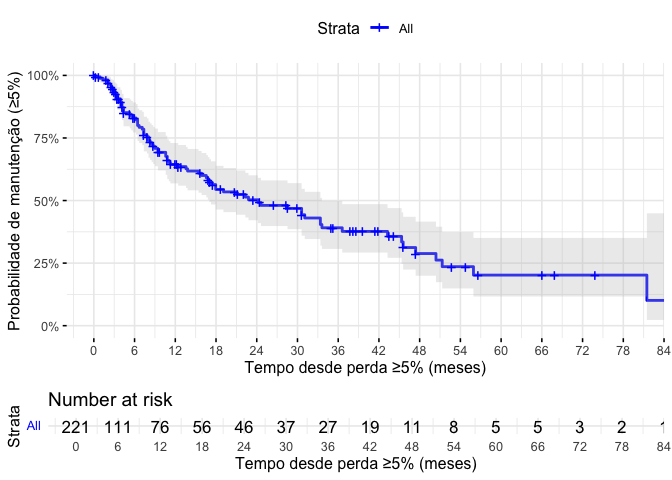

ODIS Retrospectivo Data Analysis
Análise dos dados dos pacientes com obesidade
Consultas
Rows: 17 Columns: 4
── Column specification ────────────────────────────────────────────────────────
Delimiter: ","
chr (4): variable, type, levels, description
ℹ Use `spec()` to retrieve the full column specification for this data.
ℹ Specify the column types or set `show_col_types = FALSE` to quiet this message.O banco de dados consultas reúne 5.202 observações referentes a consultas médicas de 872 pacientes distintos, identificados de forma única pela variável record_id. O conjunto contém 17 variáveis, abrangendo informações sociodemográficas, datas de atendimento, medidas antropométricas e indicadores derivados do seguimento longitudinal. As variáveis incluem dados fixos, como birthdate (data de nascimento), sex e race, além de variáveis temporais (date_consultation, date_weight, baseline_date) que permitem acompanhar a evolução clínica ao longo do tempo. Foram incorporadas medidas diretas, como weight_kg e height_m, e variáveis calculadas, como o índice de massa corporal (bmi) e a perda percentual de peso em relação ao valor basal (percent_weight_loss).
O dataset apresenta algumas particularidades em termos de completude: enquanto variáveis como age, sex e race estão completas para todos os registros, há proporções relevantes de dados faltantes em weight_kg (cerca de 20%) e, consequentemente, em variáveis derivadas como bmi e percent_weight_loss. A variável height_m, definida pela mediana das medidas disponíveis por paciente ou complementada via prontuário, apresenta taxa de preenchimento próxima de 100%. As medidas temporais mostram amplitude de acompanhamento de janeiro de 2016 a outubro de 2023, com variação importante no número de consultas por paciente (mediana de 4 consultas, podendo chegar a mais de 30).
Em síntese, consultas constitui uma base de dados longitudinal, estruturada de modo que cada linha representa uma consulta de um paciente em determinada data, trazendo consigo tanto informações fixas (características do indivíduo) quanto variáveis dinâmicas (peso, IMC, perda relativa de peso), permitindo análises temporais da trajetória clínica dos indivíduos.
Filtrando a amostra
Por IMC
Esse código cria um novo dataframe chamado consultas_bmi a partir do dataframe consultas, selecionando apenas os pacientes que em algum momento do seguimento apresentaram IMC ≥ 30 kg/m² (critério de obesidade).
Depois de aplicar o filtro, o dataframe consultas (5.202 consultas, 872 pacientes) passou a conter apenas os pacientes que apresentaram IMC ≥ 30 em pelo menos uma consulta, resultando no novo dataframe obese. O dataframe obese mantém a mesma estrutura de variáveis (17 colunas), mas contém menos pacientes (695) e menos consultas (4.102), restrito àqueles que tiveram obesidade (IMC ≥ 30) em pelo menos uma avaliação. Esse subconjunto apresenta peso e IMC médios mais altos, idade média ligeiramente menor e preserva as distribuições de sexo, raça e período de acompanhamento do banco original.
O que mudou em relação ao original:
- O número de pacientes reduziu de 872 para 695, com exclusão de 177 (20,3%) pacientes que nunca tiveram IMC ≥ 30.
- O número de consultas reduziu de 5.202 para 4.102, com exclusão de 1100 (21,2%) consultas de pacientes que nunca tiveram IMC ≥ 30.
- Distribuição etária: a média de idade diminuiu de ~47,3 anos para ~45,7 anos, indicando que a subamostra de obesos é um pouco mais jovem.
- Sexo: mantém-se a predominância feminina [F: 2.627 (60.2%) vs. M: 1.475 (64%)], com leve aumento proporcional de mulheres.
- Raça: permanece similar, mas com leve redução proporcional dos registros classificados como “VERIFICAR”.
- Peso médio subiu de ~117 kg para ~130 kg.
- IMC médio subiu de ~42,9 para ~47,5, com valores mínimos de 19,8 (pois algumas consultas de obesos podem ter IMC < 30, mas o paciente já foi obeso em outra consulta).
- Altura média manteve-se estável (1,64 m → 1,65 m).
- Perda percentual de peso (percent_weight_loss): distribuição semelhante, mas agora restrita ao grupo com obesidade em algum momento.
- Datas: período de acompanhamento se mantém (2016–2023), apenas com redução no número de observações.
| Característica | consultas (original) | novo (IMC ≥ 30 em ≥1 consulta) |
|---|---|---|
| Nº de pacientes | 872 | 695 (79.7%) / perda de 20.3% |
| Nº de consultas | 5.202 | 4.102 |
| Idade média (anos) | 47,3 | 45,7 |
| Peso médio (kg) | 117 | 130 |
| IMC médio (kg/m²) | 42,9 | 47,5 |
| Altura média (m) | 1,64 | 1,65 |
| % de mulheres | 60,2% (3.133/5.202) | 64,0% (2.627/4.102) |
| Período das consultas | 2016–2023 | 2016–2023 |
Por idade
Interseção (eval=false)
Nesta primeira opção, os pacientes que foram atendidos enquanto ainda eram menores de idade (idade < 18 anos) e que também tiveram consultas na vida adulta (idade ≥ 18 anos) são mantidos. O código a seguir filtra os pacientes obesos, mantendo apenas aqueles que tiveram pelo menos uma consulta na vida adulta, e exclui os que foram atendidos exclusivamente antes dos 18 anos.
Primeira opção (obese_intersect): inclui todos os pacientes com pelo menos uma consulta ≥ 18 anos (mesmo que tenham histórico antes dos 18).
consultas_underage <- consultas_bmi %>%
arrange(desc(age)
) %>%
filter(age < 18
) %>%
distinct(record_id, .keep_all = TRUE)
# Ordena o dataframe obese por idade decrescente (arrange(desc(age))).
# Filtra apenas registros de pacientes com idade < 18 anos.
# Usa distinct(record_id, .keep_all = TRUE) → mantém apenas uma linha por paciente.
# Como está ordenado em ordem decrescente de idade, fica registrada a maior idade do paciente enquanto menor de idade.
# Resultado: cada paciente aparece uma única vez, representando sua consulta mais velha antes dos 18 anos.
consultas_adults <- consultas_bmi %>%
arrange(desc(age)
) %>%
filter(age >= 18
) %>%
distinct(record_id, .keep_all = TRUE)
# Mesmo processo, mas agora para pacientes com idade ≥ 18 anos.
# Resultado: cada paciente aparece uma vez, representando sua consulta mais velha em idade adulta.
consultas_adults_records <- consultas_adults %>% pull(record_id)
# Cria um vetor (character) contendo os IDs (record_id) de todos os pacientes que têm pelo menos uma consulta na idade adulta.
common_record_ids <- intersect(consultas_underage$record_id, consultas_adults$record_id)
# Identifica os pacientes que aparecem nos dois grupos (ou seja, têm registro tanto antes quanto depois dos 18 anos).
# intersect() retorna o conjunto de record_id comum aos dois dataframes.
obese_intersect <- consultas_bmi %>%
filter(
record_id %in% consultas_adults_records
)O código divide os pacientes obesos em dois subconjuntos: aqueles que tiveram consultas ainda menores de 18 anos e aqueles que já tiveram consultas na vida adulta. Para cada paciente, mantém apenas uma linha representando a consulta de maior idade em cada fase. Além disso, identifica o subconjunto de pacientes que estavam presentes em ambas as fases de acompanhamento, ou seja, que iniciaram o seguimento quando menores de idade e continuaram após atingir a maioridade. Com base nisso, o passo final cria o dataframe obese que contém apenas pacientes com ao menos uma consulta na vida adulta (filtra-se consultas_bmi mantendo os registros cujo record_id aparece em consultas_adults_records). Assim, todos os indivíduos acompanhados exclusivamente antes dos 18 anos são excluídos do conjunto principal, enquanto os que atingiram a maioridade permanecem para as análises. O vetor common_record_ids continua disponível caso seja necessário isolar, em análises específicas, o subgrupo que transitou de menor para adulto (isto é, pacientes com histórico em ambas as fases).
Um total de 11 pacientes foram atendidos na clínica enquanto ainda eram menores de idade, correspondendo a 140 consultas médicas. Destes, 4 continuaram o acompanhamento após atingirem a maioridade, restando apenas 7 pacientes que não completaram a maioridade durante o período de acompanhamento.
obese_intersect é o dataset de consultas contendo os registros dos pacientes maiores de idade que tiveram pelo menos um IMC > 30 e acompanhados durante o período de interesse, com um total de 4062 consultas médicas.
Exclusão de pacientes menores de idade
Segunda opção (obese_adults_only): inclui apenas pacientes que entraram no acompanhamento já adultos, eliminando qualquer paciente que teve consulta como menor de idade.
# 1. Identifica todos os pacientes que tiveram consultas < 18 anos
underage_records <- consultas_bmi %>%
filter(age < 18) %>%
pull(record_id) %>%
unique()
# 2. Cria o dataset 'obese' apenas com consultas de pacientes adultos
# que nunca tiveram consulta como menores de idade
consultas_adults <- consultas_bmi %>%
filter(
age >= 18, # garante só idade adulta
!(record_id %in% underage_records)) # exclui quem já foi <18O código acima cria um novo dataframe chamado consultas_adults, que contém apenas os pacientes que foram atendidos exclusivamente na vida adulta (idade ≥ 18 anos). Pacientes que tiveram consultas enquanto menores de idade são completamente excluídos do conjunto.
O que mudou em
consultas_adultsem relação aconsultas_bmi:
Comparativo objetivo do que mudou ao excluir qualquer paciente que já teve consulta < 18 anos (passando de consultas_bmi → consultas_adults):
- Número de
consultas: linhas caíram de 4.102 para 4.039 (n=63; redução de −1,5%). Pacientesúnicos: de 695 para 684 (n=11; redução de −1,6%).Idade: mínimo subiu de 5,68 para 18,0 anos (como esperado); média levemente maior (45,7 → 46,2).Sexo: % de mulheres praticamente estável (64,0% → 64,4%; 2.627/4.102 vs. 2.600/4.039).Antropometria: médias muito semelhantes (peso ~130 kg; IMC 47,5 → 47,6); leve redução no desvio-padrão do peso (38,3 → 37,9).- Completude: pequenos ganhos — faltantes em weight_kg e bmi caem de 790 para 784; percent_weight_loss de 1.384 para 1.369.
- Período de consultas permanece 2016–2023.
Pipe table:
| Métrica | Antes: consultas_bmi | Depois: consultas_adults |
|---|---|---|
| Linhas (consultas) | 4.102 | 4.039 |
| Pacientes únicos (record_id) | 695 | 684 |
| Idade média (anos) | 45,7 | 46,2 |
| Idade mínima (anos) | 5,68 | 18,0 |
| Mulheres, n (%) | 2.627 (64,0%) | 2.600 (64,4%) |
| Peso médio (kg) | 130 | 130 |
| IMC médio (kg/m²) | 47,5 | 47,6 |
| weight_kg faltante (n) | 790 | 784 |
| bmi faltante (n) | 790 | 784 |
| percent_weight_loss faltante | 1.384 | 1.369 |
Interpretação: a exclusão dos pacientes com histórico de consultas na menoridade produz um conjunto estritamente adulto, com mudanças mínimas nas estatísticas descritivas e pequena redução do número de registros e pacientes. Isso sugere que a fração de indivíduos com histórico <18 anos era relativamente pequena e não distorcia substancialmente as médias antropométricas do grupo.
≥ 2 consultas
consultas_2_visits <- consultas_adults %>%
group_by(record_id) %>%
filter(n() >= 2) %>%
ungroup()
# agrupando os dados por `record_id` (identificador único do paciente) e mantendo apenas aqueles grupos (pacientes) que possuem duas ou mais observações (consultas). O resultado é um conjunto de dados que exclui pacientes com apenas uma consulta.Esse código cria um novo dataframe chamado consultas_2_visits, que contém apenas os pacientes que tiveram pelo menos duas consultas médicas registradas.
O que mudou em
consultas_2_visitsem relação aconsultas_adults:
Comparativo objetivo do que mudou ao exigir ≥2 consultas por paciente (passando de consultas_adults para consultas_2_visits):
- Número de consultas: linhas caíram de 4.039 para 3.929 (n=110; redução de −2,7%).
- Pacientes únicos: de 684 para 574 (n=110; redução de −16,1%), correspondendo justamente aos que tinham apenas uma consulta.
- Idade: média praticamente inalterada (46,2 → 46,3 anos); mínima continua em 18 anos.
- Sexo: % de mulheres estável (64,4% → 64,3%; 2.600/4.039 vs. 2.523/3.929).
- Antropometria: valores médios quase idênticos (peso ~130 kg; IMC 47,6 → 47,6).
- Completude: leve melhora na proporção de dados completos, já que pacientes de consulta única (com mais risco de faltar medidas) foram removidos — ex:
percent_weight_lossfaltante reduziu de 1.369 para 1.259 (N=110).
Pipe table
| Métrica | Antes: consultas_adults | Depois: consultas_2_visits |
|---|---|---|
| Linhas (consultas) | 4.039 | 3.929 |
| Pacientes únicos (record_id) | 684 | 574 |
| Idade média (anos) | 46,2 | 46,3 |
| Idade mínima (anos) | 18,0 | 18,0 |
| Mulheres, n (%) | 2.600 (64,4%) | 2.523 (64,3%) |
| Peso médio (kg) | 130 | 130 |
| IMC médio (kg/m²) | 47,6 | 47,6 |
| weight_kg faltante (n) | 784 | 784 |
| bmi faltante (n) | 784 | 784 |
| percent_weight_loss faltante | 1.369 | 1.259 |
Interpretação: ao excluir pacientes com apenas uma consulta, reduz-se de forma significativa o número de indivíduos (−16%), mas mantém-se praticamente inalterado o perfil clínico (idade, sexo, peso e IMC médios). O conjunto resultante é mais adequado para análises longitudinais de evolução, pois garante acompanhamento mínimo de duas consultas por paciente.
Objetivos
Objetivo Geral
Analisar as medidas de frequência, tendência central e dispersão associadas ao tratamento da obesidade, visando identificar variáveis clínicas e epidemiológicas associadas a melhor resposta ao tratamento clínico da obesidade.
Componente descritivo
1.1. * Perfil epidemiológico na primeira consulta: idade, sexo, etnia, IMC, comorbidades.
1.2. Incidência de doenças cardiovasculares, osteometabólicas, anemias e deficiências vitamínicas.
1.3. * Indicadores de atendimento: número de consultas e tempo de seguimento.
1.4. Tipos de tratamentos prescritos para obesidade e dislipidemia e sua frequência.
1.5. Causa dos 95 óbitos.
1.6. * Proporção de indivíduos com peso final maior que o inicial.
1.7. * Proporção de consultas (a partir da segunda) com ganho ou perda de peso em relação à anterior.Análises pelo tempo de seguimento
2.1. * Comparar a porcentagem máxima de perda de peso entre seguimento ≤12 meses e >12 meses, ajustando por sexo, etnia, idade, IMC inicial, comorbidades e uso de medicação.
2.2. * Avaliar associação da perda de peso máxima com variáveis demográficas, clínicas e de seguimento.
2.3. * Descrever o momento em que cada indivíduo atingiu ≥5% de perda em relação ao peso inicial.Subgrupos com perda ≥5%
3.1. * Identificar o tempo e a consulta da primeira observação de perda ≥5%.
3.2. * Medidas de frequência de reganho de peso após a perda ≥5%.
3.3. * Comparar a perda máxima entre subgrupos (≤6 meses, 6–12 meses, >12 meses).Grupo sem perda ≥5%
4.1. * Identificar tempo de seguimento e consulta com maior perda observada.
4.2. * Descrever o ganho de peso após esse momento.Protocolos e padronização
5.1. Elaborar protocolo de atendimento com critérios de inclusão, rastreio, seguimento, tratamento e alta.
5.2. Desenvolver ficha médica padronizada para implementação do protocolo.
Escolha do dataset
Escolha o dataset desejado para as análises subsequentes
obese <- consultas_2_visitsrm(
consultas,
consultas_bmi,
obese_intersect,
consultas_adults,
consultas_2_visits,
consultas_underage,
consultas_adults_records,
common_record_ids,
underage_records)1. Componente descritivo
1.1. Perfil epidemiológico na primeira consulta: idade, sexo, etnia, IMC, comorbidades.
# 1) Primeira consulta por paciente
baseline <- obese %>%
group_by(record_id) %>%
arrange(date_consultation, .by_group = TRUE) %>%
slice(1) %>%
ungroup()
# 2) Funções auxiliares ----------------------------------------------------
# 2.1) Estatísticas com IC95% (t de Student) + min/max, ignorando NAs
ic95_stats <- function(x) {
x <- x[!is.na(x)]
n <- length(x)
if (n == 0) {
return(c(media = NA_real_, li = NA_real_, ls = NA_real_, min = NA_real_, max = NA_real_))
}
m <- mean(x)
s <- sd(x)
se <- s / sqrt(n)
tcrit <- if (n > 1) qt(0.975, df = n - 1) else NA_real_
li <- if (!is.na(tcrit)) m - tcrit * se else NA_real_
ls <- if (!is.na(tcrit)) m + tcrit * se else NA_real_
c(media = m, li = li, ls = ls, min = min(x), max = max(x))
}
# 2.2) Resumo de completude (N missings e %)
na_profile <- function(v) {
n_total <- length(v)
n_na <- sum(is.na(v))
pct_na <- if (n_total > 0) 100 * n_na / n_total else NA_real_
c(n_total = n_total, n_na = n_na, pct_na = pct_na)
}
# 3) Resumos NUMÉRICOS -----------------------------------------------------
# 3.1) Estatísticas com IC95% para variáveis contínuas
idade_stats <- ic95_stats(baseline$age)
peso_stats <- ic95_stats(baseline$weight_kg)
altura_stats <- ic95_stats(baseline$height_m)
imc_stats <- ic95_stats(baseline$bmi)
# 3.2) Completude para variáveis contínuas
idade_na <- na_profile(baseline$age)
peso_na <- na_profile(baseline$weight_kg)
altura_na <- na_profile(baseline$height_m)
imc_na <- na_profile(baseline$bmi)
# 4) Resumos CATEGÓRICOS ---------------------------------------------------
# Para sex e race, proporções calculadas sobre N não-missing,
# mas também exibimos N e % de NAs
# 4.1) Sexo
sexo_baseline <- baseline %>%
count(sex, name = "n") %>%
mutate(prop = 100 * n / sum(n, na.rm = TRUE))
sexo_na <- na_profile(baseline$sex)
# 4.2) Etnia
etnia_baseline <- baseline %>%
count(race, name = "n") %>%
mutate(prop = 100 * n / sum(n, na.rm = TRUE))
etnia_na <- na_profile(baseline$race)
# 5) Tibbles consolidados ---------------------------------------------------
# 5.1) Perfil numérico (uma linha por variável, com média, IC95, min, max, NAs)
perfil_numerico <- tibble::tibble(
Variavel = c("Idade (anos)", "Peso (kg)", "Altura (m)", "IMC (kg/m²)"),
Media = c(idade_stats["media"], peso_stats["media"], altura_stats["media"], imc_stats["media"]),
IC95_inf = c(idade_stats["li"], peso_stats["li"], altura_stats["li"], imc_stats["li"]),
IC95_sup = c(idade_stats["ls"], peso_stats["ls"], altura_stats["ls"], imc_stats["ls"]),
Minimo = c(idade_stats["min"], peso_stats["min"], altura_stats["min"], imc_stats["min"]),
Maximo = c(idade_stats["max"], peso_stats["max"], altura_stats["max"], imc_stats["max"]),
N_total = c(idade_na["n_total"], peso_na["n_total"], altura_na["n_total"], imc_na["n_total"]),
N_NA = c(idade_na["n_na"], peso_na["n_na"], altura_na["n_na"], imc_na["n_na"]),
Perc_NA = c(idade_na["pct_na"], peso_na["pct_na"], altura_na["pct_na"], imc_na["pct_na"])
)
# 5.2) Perfil categórico (uma linha por categoria + linha de NAs)
sexo_tbl <- sexo_baseline %>%
mutate(Variavel = "Sexo",
Categoria = as.character(sex)) %>%
select(Variavel, Categoria, n, prop)
sexo_tbl_na <- tibble::tibble(
Variavel = "Sexo",
Categoria = "NA",
n = sexo_na["n_na"],
prop = 100 * as.numeric(sexo_na["n_na"]) / as.numeric(sexo_na["n_total"])
)
etnia_tbl <- etnia_baseline %>%
mutate(Variavel = "Etnia",
Categoria = as.character(race)) %>%
select(Variavel, Categoria, n, prop)
etnia_tbl_na <- tibble::tibble(
Variavel = "Etnia",
Categoria = "NA",
n = etnia_na["n_na"],
prop = 100 * as.numeric(etnia_na["n_na"]) / as.numeric(etnia_na["n_total"])
)
perfil_categorico <- bind_rows(
sexo_tbl, sexo_tbl_na,
etnia_tbl, etnia_tbl_na
)
# 6) N total de pacientes
n_total_pacientes <- dplyr::n_distinct(baseline$record_id)O código está estruturado em blocos que constroem o perfil epidemiológico dos pacientes na primeira consulta:
Primeira consulta por paciente: cria o dataframe
baseline, contendo apenas a primeira consulta registrada de cada paciente, para servir como referência do perfil inicial.Funções auxiliares:
ic95_stats: calcula média, intervalo de confiança de 95% (usando t de Student), valor mínimo e máximo de variáveis numéricas.
na_profile: calcula completude das variáveis (total, número e porcentagem de valores ausentes).
Resumos numéricos: aplica
ic95_statsena_profileàs variáveis contínuas (idade, peso, altura e IMC) da primeira consulta, gerando estatísticas descritivas com IC95% e informações de valores ausentes.Resumos categóricos: gera frequências absolutas e relativas para sexo e etnia, além de contabilizar valores ausentes para cada variável categórica.
Tabelas consolidadas:
perfil_numerico: organiza as estatísticas das variáveis contínuas em formato tabular (uma linha por variável).
perfil_categorico: organiza as distribuições de sexo e etnia, incluindo linhas extras para valores ausentes.
Número total de pacientes: calcula o total de indivíduos distintos na base
baseline, fornecendo o tamanho da amostra inicial.
# Função para formatar com decimais definidos
fmt <- function(x, dec) {
ifelse(is.na(x), "",
format(round(as.numeric(x), dec),
big.mark = ".", decimal.mark = ",", trim = TRUE))
}
# Definir número de casas decimais por variável
dec_map <- c("Idade (anos)" = 0,
"Peso (kg)" = 1,
"Altura (m)" = 1,
"IMC (kg/m²)" = 1)
# Aplicar formatação na tabela numérica
perfil_numerico_fmt <- perfil_numerico %>%
rowwise() %>%
mutate(
d = dec_map[Variavel],
Media = fmt(Media, d),
IC95_inf = fmt(IC95_inf, d),
IC95_sup = fmt(IC95_sup, d),
Minimo = fmt(Minimo, d),
Maximo = fmt(Maximo, d),
Perc_NA = paste0(fmt(Perc_NA, 1), "%")
) %>%
ungroup() %>%
select(-d)
# Renderizar tabela final
knitr::kable(
perfil_numerico_fmt,
col.names = c("Variável","Média","IC95% Inferior","IC95% Superior","Mínimo","Máximo","N total","N (NA)","% (NA)"),
align = c("l","c","c","c","c","c","c","c","c")
)| Variável | Média | IC95% Inferior | IC95% Superior | Mínimo | Máximo | N total | N (NA) | % (NA) |
|---|---|---|---|---|---|---|---|---|
| Idade (anos) | 44 | 43 | 45 | 18 | 84 | 574 | 0 | 0% |
| Peso (kg) | 133,8 | 130,4 | 137,2 | 59,7 | 268,7 | 574 | 99 | 17,2% |
| Altura (m) | 1,6 | 1,6 | 1,7 | 1,1 | 1,9 | 574 | 0 | 0% |
| IMC (kg/m²) | 48,9 | 47,8 | 50 | 26,9 | 91,5 | 574 | 99 | 17,2% |
Este código prepara e exibe a tabela formatada das variáveis numéricas do perfil basal:
Função de formatação (
fmt): cria um padrão para exibir números com o número de casas decimais definido, usando separador decimal em vírgula e separador de milhar em ponto. Valores ausentes são exibidos como vazio.Mapa de decimais (
dec_map): define quantas casas decimais cada variável deve ter (idade sem casas decimais; peso, altura e IMC com uma casa decimal).Aplicação da formatação: para cada linha da tabela
perfil_numerico, aplica o número adequado de casas decimais, formata estatísticas (média, IC95%, mínimo, máximo) e acrescenta o símbolo de porcentagem na coluna de dados ausentes.Renderização: gera a tabela final em formato bem apresentado usando
knitr::kable, com nomes de colunas ajustados e alinhamento centralizado para valores numéricos.
# Função de formatação
fmt_num <- function(x, dec) format(round(x, dec), big.mark = ".", decimal.mark = ",", trim = TRUE)
# Aplicar formatação
perfil_categorico_fmt <- perfil_categorico %>%
mutate(
n = fmt_num(n, 0), # N total sem casas decimais
prop = fmt_num(prop, 1) # Proporção (%) com 1 casa decimal
)
# Renderizar tabela
knitr::kable(
perfil_categorico_fmt,
col.names = c("Variável", "Categoria", "N total", "Proporção (%)"),
align = c("l", "l", "c", "c"),
caption = "Perfil categórico: sexo e etnia na primeira consulta"
)| Variável | Categoria | N total | Proporção (%) |
|---|---|---|---|
| Sexo | F | 375 | 65,3 |
| Sexo | M | 199 | 34,7 |
| Sexo | NA | 0 | 0,0 |
| Etnia | Branco | 428 | 74,6 |
| Etnia | Mulato (Pardo) | 95 | 16,6 |
| Etnia | Preto | 48 | 8,4 |
| Etnia | VERIFICAR | 3 | 0,5 |
| Etnia | NA | 0 | 0,0 |
Este código organiza e exibe a tabela formatada das variáveis categóricas do perfil basal:
Função de formatação (
fmt_num): define a apresentação numérica com separador decimal em vírgula e separador de milhar em ponto.- Contagens (
n) são exibidas sem casas decimais.
- Proporções (
prop) são exibidas com uma casa decimal.
- Contagens (
Aplicação da formatação: transforma os valores da tabela
perfil_categoricopara o formato definido, garantindo consistência na apresentação.Renderização: gera a tabela final com
knitr::kable, exibindo variáveis, categorias, frequências absolutas e relativas (%), com legenda clara sobre o conteúdo.
Interpretação:
Foram incluídos 574 pacientes na linha de base.
A idade média foi de 44 anos (IC95%: 43–45), variando entre 18 e 84 anos.
O peso médio foi de 133,8 kg (IC95%: 130,4–137,2), com mínimo de 59,7 kg e máximo de 268,7 kg.
A altura média foi de 1,65 m (IC95%: 1,64–1,66), variando de 1,15 m a 1,91 m.
O IMC médio foi de 48,9 kg/m² (IC95%: 47,8–50,0), com valores mínimos e máximos de 26,9 kg/m² e 91,5 kg/m², respectivamente.
Quanto à completude dos dados, não houve valores ausentes para idade e altura. Já para peso e IMC observaram-se 99 casos faltantes (17,2%).
Na distribuição por sexo, 375 pacientes (65,3%) eram mulheres e 199 (34,7%) homens, sem dados ausentes.
Em relação à etnia, predominou a categoria Branco (n=428; 74,6%), seguida de Mulato/Pardo (n=95; 16,6%), Preto (n=48; 8,4%) e casos classificados como “VERIFICAR” (n=3; 0,5%). Não houve valores ausentes registrados.
Resumo interpretativo: A população atendida na primeira consulta caracteriza-se por indivíduos de meia-idade, com predomínio do sexo feminino, obesidade grave (IMC médio ≈49 kg/m²) e predominância de pacientes brancos. A completude foi satisfatória, com ausência de dados apenas para peso e IMC em cerca de 17% dos casos.
Resultados: Na primeira consulta foram avaliados 574 pacientes, com idade média de 44 anos (IC95%: 43–45), variando entre 18 e 84 anos. O peso médio foi de 133,8 kg (IC95%: 130,4–137,2) e a altura média de 1,65 m (IC95%: 1,64–1,66), resultando em um IMC médio de 48,9 kg/m² (IC95%: 47,8–50,0). Os valores mínimos e máximos observados foram, respectivamente, 59,7 e 268,7 kg para peso; 1,15 e 1,91 m para altura; e 26,9 e 91,5 kg/m² para IMC. Houve ausência de dados em 17,2% das observações de peso e IMC. A maioria dos pacientes era do sexo feminino (65,3%), enquanto 34,7% eram do sexo masculino. Quanto à etnia, predominou a categoria branca (74,6%), seguida de parda (16,6%), preta (8,4%) e casos classificados como “verificar” (0,5%).
# Remover apenas objetos intermediários criados durante a análise do item 1.1
# Mantendo as funções auxiliares (ic95_stats, na_profile, fmt, fmt_num)
rm(
#baseline,
idade_stats, peso_stats, altura_stats, imc_stats,
idade_na, peso_na, altura_na, imc_na,
sexo_baseline, sexo_na,
etnia_baseline, etnia_na,
sexo_tbl, sexo_tbl_na,
etnia_tbl, etnia_tbl_na,
perfil_numerico,
perfil_numerico_fmt,
perfil_categorico,
perfil_categorico_fmt,
n_total_pacientes,
dec_map
)Este código limpa o ambiente de trabalho removendo apenas os objetos intermediários criados durante a análise do perfil epidemiológico da primeira consulta. Ele mantém disponíveis apenas as funções auxiliares e as tabelas finais formatadas, enquanto descarta estatísticas temporárias, perfis numéricos e categóricos intermediários e o mapa de formatação.
1.3. Indicadores de atendimento: número de consultas e tempo de seguimento.
# calcular número de consultas, tempo de seguimento e tempo médio entre consultas
indicadores_atendimento <- obese %>%
group_by(record_id) %>%
summarise(
n_consultas = n(), # número de consultas por paciente
# tempo total de seguimento entre a 1ª e a última consulta
tempo_seguimento_dias = as.numeric(max(date_consultation, na.rm = TRUE) -
min(date_consultation, na.rm = TRUE)),
tempo_seguimento_semanas = tempo_seguimento_dias / 7,
tempo_seguimento_meses = tempo_seguimento_dias / 30.44,
tempo_seguimento_anos = tempo_seguimento_dias / 365.25,
# tempo médio entre consultas (média dos intervalos entre visitas consecutivas)
tempo_medio_entre_consultas_dias = dplyr::if_else(
n_consultas > 1,
tempo_seguimento_dias / (n_consultas - 1),
as.numeric(NA)
),
# conversões auxiliares
tempo_medio_entre_consultas_semanas = tempo_medio_entre_consultas_dias / 7,
tempo_medio_entre_consultas_meses = tempo_medio_entre_consultas_dias / 30.44,
tempo_medio_entre_consultas_anos = tempo_medio_entre_consultas_dias / 365.25,
.groups = "drop"
)Esse código cria o dataframe indicadores_atendimento, que calcula os principais indicadores de atendimento para cada paciente. Primeiro, obtém o número total de consultas realizadas. Em seguida, calcula o tempo de seguimento, definido como a diferença entre a primeira e a última consulta, e expressa esse intervalo em dias, semanas, meses e anos. Depois, estima o tempo médio entre consultas, que corresponde à média dos intervalos entre visitas consecutivas, também convertido para diferentes unidades de tempo. O resultado é um conjunto de indicadores resumidos por paciente, organizados em uma tabela consolidada.
# Medidas solicitadas: mediana, p5, p25, p75, p95, máximo
sumario_n_consultas <- indicadores_atendimento %>%
summarise(
p5 = quantile(n_consultas, probs = 0.05, na.rm = TRUE, type = 7),
p25 = quantile(n_consultas, probs = 0.25, na.rm = TRUE, type = 7),
mediana = quantile(n_consultas, probs = 0.50, na.rm = TRUE, type = 7),
p75 = quantile(n_consultas, probs = 0.75, na.rm = TRUE, type = 7),
p95 = quantile(n_consultas, probs = 0.95, na.rm = TRUE, type = 7),
max = max(n_consultas, na.rm = TRUE)
) %>%
pivot_longer(everything(), names_to = "medida", values_to = "valor") %>%
mutate(valor_fmt = fmt(valor, dec = 0)) %>%
select(medida, valor = valor_fmt)
kable(sumario_n_consultas,
caption = "Número de consultas por paciente — mediana, percentis (5, 25, 75, 95) e máximo")| medida | valor |
|---|---|
| p5 | 2 |
| p25 | 3 |
| mediana | 5 |
| p75 | 9 |
| p95 | 17 |
| max | 26 |
Este código gera um resumo descritivo do número de consultas por paciente. Ele calcula medidas de tendência e dispersão, incluindo os percentis 5, 25, 50 (mediana), 75 e 95, além do valor máximo observado. Os resultados são reorganizados em formato longo, com as medidas e seus valores correspondentes, e formatados sem casas decimais para facilitar a leitura. Por fim, a tabela é exibida com kable, trazendo de forma clara a distribuição do número de consultas na amostra.
# Distribuição de frequências (absoluta e relativa)
tabela_frequencias <- indicadores_atendimento %>%
count(n_consultas, name = "freq") %>%
mutate(
pct = 100 * freq / sum(freq),
freq_fmt = fmt(freq, dec = 0),
pct_fmt = paste0(fmt(pct, dec = 2), "%")
) %>%
select(`n_consultas` = n_consultas,
`frequência` = freq_fmt,
`%` = pct_fmt)
kable(tabela_frequencias,
caption = "Distribuição do número de consultas por paciente (frequência e porcentagem)",
align = c("c", "c", "c")
)| n_consultas | frequência | % |
|---|---|---|
| 2 | 91 | 15,85% |
| 3 | 83 | 14,46% |
| 4 | 74 | 12,89% |
| 5 | 52 | 9,06% |
| 6 | 37 | 6,45% |
| 7 | 45 | 7,84% |
| 8 | 35 | 6,10% |
| 9 | 24 | 4,18% |
| 10 | 28 | 4,88% |
| 11 | 19 | 3,31% |
| 12 | 8 | 1,39% |
| 13 | 15 | 2,61% |
| 14 | 14 | 2,44% |
| 15 | 6 | 1,05% |
| 16 | 5 | 0,87% |
| 17 | 9 | 1,57% |
| 18 | 5 | 0,87% |
| 19 | 5 | 0,87% |
| 20 | 2 | 0,35% |
| 21 | 4 | 0,70% |
| 22 | 6 | 1,05% |
| 23 | 3 | 0,52% |
| 24 | 2 | 0,35% |
| 26 | 2 | 0,35% |
Este código constrói a distribuição de frequências do número de consultas por paciente. Ele conta quantos indivíduos tiveram exatamente determinado número de consultas, calcula a porcentagem correspondente em relação ao total, e formata os valores para exibição. Por fim, gera uma tabela com três colunas — número de consultas, frequência absoluta e porcentagem — apresentada de forma organizada com kable.
Resultado: O número de consultas por paciente apresentou ampla variação, oscilando entre 2 e 26 atendimentos durante o período de seguimento. A distribuição mostrou-se assimétrica à direita, com maior concentração nas faixas iniciais: 25% dos pacientes realizaram até 3 consultas, enquanto a mediana foi de 5 consultas e 75% tiveram até 9 consultas. Apenas 5% ultrapassaram 17 atendimentos, caracterizando um grupo minoritário submetido a acompanhamento mais frequente. A tabela de frequências indica que a distribuição é assimétrica à direita: a maioria concentrou-se entre 2 e 9 consultas (cerca de 75% do total), enquanto poucos pacientes atingiram números elevados de atendimentos (acima de 20 consultas, menos de 3%). O gráfico de distribuição acumulada (ECDF) ilustra de forma clara essa tendência, evidenciando que metade dos pacientes foi acompanhada com até cinco consultas e que a curva se estabiliza progressivamente a partir de 10 atendimentos, indicando que casos de seguimento prolongado foram menos comuns.
ggplot(indicadores_atendimento, aes(x = n_consultas)) +
stat_ecdf(geom = "step") +
scale_x_continuous(
breaks = seq(0, max(indicadores_atendimento$n_consultas), by = 1) # ticks a cada 1
) +
scale_y_continuous(
breaks = seq(0, 1, by = 0.1), # ticks a cada 10%
labels = scales::percent_format(accuracy = 1)
) +
labs(x = "Número de consultas por paciente", y = "Acumulado (%)") +
theme_minimal(base_size = 12) +
theme(
panel.grid.major.y = element_line(color = "grey80", linewidth = 0.3), # linhas horizontais principais
panel.grid.minor.y = element_line(color = "grey90", linewidth = 0.1), # linhas horizontais menores
panel.grid.major.x = element_line(color = "grey90", linewidth = 0.3) # linhas verticais discretas
)
Legenda O gráfico ECDF mostra no eixo X o número de consultas por paciente e no eixo Y a proporção acumulada de pacientes que atingiram até aquele valor. Observa-se que cerca de 30% dos pacientes tiveram até 3 consultas, aproximadamente 50% até 5 consultas (mediana), e 75% até 9 consultas (percentil 75). A curva se aproxima de 100% em torno de 26 consultas, que é o valor máximo observado. Esse tipo de gráfico facilita a visualização dos percentis: basta projetar horizontalmente a linha desejada (25%, 50%, 75%, etc.) até interceptar a curva e ler no eixo X o valor correspondente de consultas.
library(dplyr)
library(knitr)
resumo_tempo_seguimento <- indicadores_atendimento %>%
summarise(
dias_mediana = median(tempo_seguimento_dias, na.rm = TRUE),
dias_IQR = IQR(tempo_seguimento_dias, na.rm = TRUE),
dias_max = max(tempo_seguimento_dias, na.rm = TRUE),
semanas_mediana = median(tempo_seguimento_semanas, na.rm = TRUE),
semanas_IQR = IQR(tempo_seguimento_semanas, na.rm = TRUE),
semanas_max = max(tempo_seguimento_semanas, na.rm = TRUE),
meses_mediana = median(tempo_seguimento_meses, na.rm = TRUE),
meses_IQR = IQR(tempo_seguimento_meses, na.rm = TRUE),
meses_max = max(tempo_seguimento_meses, na.rm = TRUE),
anos_mediana = median(tempo_seguimento_anos, na.rm = TRUE),
anos_IQR = IQR(tempo_seguimento_anos, na.rm = TRUE),
anos_max = max(tempo_seguimento_anos, na.rm = TRUE)
) %>%
tidyr::pivot_longer(
cols = everything(),
names_to = c("tempo", "estatistica"),
names_sep = "_",
values_to = "valor"
) %>%
tidyr::pivot_wider(
names_from = estatistica,
values_from = valor
) %>%
# aplicar a função fmt com 2 casas decimais
mutate(across(c(mediana, IQR, max), ~fmt(.x, dec = 1)))
kable(resumo_tempo_seguimento,
caption = "Tempo de seguimento em dias, semanas, meses e anos (mediana, IQR, máximo)")| tempo | mediana | IQR | max |
|---|---|---|---|
| dias | 563,5 | 971,2 | 2.800,0 |
| semanas | 80,5 | 138,8 | 400,0 |
| meses | 18,5 | 31,9 | 92,0 |
| anos | 1,5 | 2,7 | 7,7 |
Este código gera um resumo estatístico do tempo de seguimento dos pacientes. Ele calcula, em diferentes unidades de tempo (dias, semanas, meses e anos), a mediana, o intervalo interquartílico (IQR) e o valor máximo do período entre a primeira e a última consulta. Em seguida, reorganiza os resultados em formato de tabela longa e depois larga, aplica formatação numérica com uma casa decimal, e apresenta a tabela final com kable, facilitando a interpretação dos dados de seguimento.
# Tabela com as estatísticas dos TEMPOS MÉDIOS entre consultas
resumo_intervalos_consultas <- indicadores_atendimento %>%
summarise(
dias_mediana = median(tempo_medio_entre_consultas_dias, na.rm = TRUE),
dias_IQR = IQR(tempo_medio_entre_consultas_dias, na.rm = TRUE),
dias_max = max(tempo_medio_entre_consultas_dias, na.rm = TRUE),
semanas_mediana = median(tempo_medio_entre_consultas_semanas, na.rm = TRUE),
semanas_IQR = IQR(tempo_medio_entre_consultas_semanas, na.rm = TRUE),
semanas_max = max(tempo_medio_entre_consultas_semanas, na.rm = TRUE),
meses_mediana = median(tempo_medio_entre_consultas_meses, na.rm = TRUE),
meses_IQR = IQR(tempo_medio_entre_consultas_meses, na.rm = TRUE),
meses_max = max(tempo_medio_entre_consultas_meses, na.rm = TRUE),
anos_mediana = median(tempo_medio_entre_consultas_anos, na.rm = TRUE),
anos_IQR = IQR(tempo_medio_entre_consultas_anos, na.rm = TRUE),
anos_max = max(tempo_medio_entre_consultas_anos, na.rm = TRUE)
) %>%
pivot_longer(
cols = everything(),
names_to = c("tempo", "estatistica"),
names_sep = "_",
values_to = "valor"
) %>%
pivot_wider(
names_from = estatistica,
values_from = valor
) %>%
# formatação com vírgula e 2 casas decimais usando sua função `fmt`
mutate(across(c(mediana, IQR, max), ~ fmt(.x, dec = 2)))
kable(
resumo_intervalos_consultas,
caption = "Tempo médio entre consultas em dias, semanas, meses e anos (mediana, IQR, máximo)"
)| tempo | mediana | IQR | max |
|---|---|---|---|
| dias | 120,68 | 68,78 | 777,00 |
| semanas | 17,24 | 9,82 | 111,00 |
| meses | 3,96 | 2,26 | 25,53 |
| anos | 0,33 | 0,19 | 2,13 |
Este código resume o tempo médio entre consultas dos pacientes. Ele calcula, em dias, semanas, meses e anos, as medidas de posição e dispersão: mediana, intervalo interquartílico (IQR) e valor máximo. Depois, reorganiza os resultados em formato de tabela, aplica a formatação numérica com duas casas decimais e apresenta a saída final de forma organizada com kable, permitindo visualizar claramente os intervalos médios entre as consultas.
Resultado: O tempo de seguimento dos pacientes apresentou grande amplitude, variando de algumas semanas a mais de 7 anos. A mediana foi de 18,5 meses (IQR: 31,9), equivalente a 1,5 anos (IQR: 2,7), com máximo de 7,7 anos de acompanhamento. Esse resultado indica que metade dos pacientes foi acompanhada por até um ano e meio, enquanto uma parcela menor permaneceu em seguimento prolongado por vários anos.
O intervalo médio entre consultas também variou substancialmente. A mediana foi de aproximadamente 120 dias (IQR: 68,8), o que corresponde a cerca de 4 meses entre atendimentos. O percentil superior mostra que alguns pacientes chegaram a intervalos médios de até 777 dias (mais de 2 anos) entre consultas, sugerindo padrões heterogêneos de acompanhamento.
Em conjunto, esses achados mostram que a maioria dos pacientes foi acompanhada em intervalos regulares de poucos meses, porém com expressiva variação tanto na duração total do seguimento quanto na frequência dos atendimentos.
Resultado (versão curta): O tempo de seguimento variou amplamente, com mediana de 1,5 anos e máximo de 7,7 anos. O intervalo médio entre consultas foi de aproximadamente 4 meses (mediana: 120 dias), mas com grande heterogeneidade entre os pacientes. O gráfico de dispersão mostra que, embora a maioria mantenha retornos regulares em intervalos de até 6 meses, em seguimentos mais longos surgem casos com espaçamento progressivamente maior entre consultas, alcançando mais de um ano.
Discussão: Os achados referentes ao tempo de seguimento e ao intervalo médio entre consultas sugerem um padrão heterogêneo de acompanhamento. A maioria dos pacientes manteve retornos em intervalos regulares de 3 a 6 meses, consistentes com a prática clínica de monitoramento contínuo em programas de tratamento da obesidade. Entretanto, nos casos de seguimento mais longo observou-se um aumento progressivo na variabilidade, incluindo pacientes com intervalos superiores a 12 meses entre consultas. Esse comportamento pode refletir múltiplos fatores: melhora clínica inicial que reduziu a necessidade de acompanhamento frequente; dificuldades logísticas de comparecimento, como barreiras de acesso e disponibilidade de serviços; ou ainda abandono parcial do acompanhamento formal, com manutenção apenas de retornos ocasionais.
A presença desses dois perfis distintos — pacientes com consultas regulares e outros com retornos esparsos ao longo do tempo — tem implicações metodológicas e clínicas. Do ponto de vista analítico, sugere cautela na interpretação das trajetórias de peso, já que o espaçamento desigual pode introduzir vieses na avaliação da evolução longitudinal. Do ponto de vista clínico, evidencia a importância de estratégias que promovam maior adesão ao acompanhamento, sobretudo em seguimentos prolongados, para garantir a continuidade do cuidado e a detecção precoce de complicações associadas à obesidade.
library(ggplot2)
ggplot(indicadores_atendimento,
aes(x = tempo_seguimento_anos,
y = tempo_medio_entre_consultas_meses)) +
geom_point(alpha = 0.5) +
geom_smooth(method = "lm", se = TRUE, color = "blue", linewidth = 0.8) +
scale_x_continuous(breaks = seq(0, max(indicadores_atendimento$tempo_seguimento_anos, na.rm = TRUE), by = 1)) +
scale_y_continuous(breaks = seq(0, max(indicadores_atendimento$tempo_medio_entre_consultas_meses, na.rm = TRUE), by = 2)) +
labs(
x = "Tempo de seguimento (anos)",
y = "Tempo médio entre consultas (meses)"
) +
theme_minimal(base_size = 12)`geom_smooth()` using formula = 'y ~ x'
Este código gera um gráfico de dispersão para explorar a relação entre o tempo total de seguimento dos pacientes (em anos) e o intervalo médio entre consultas (em meses). Cada ponto representa um paciente, com transparência aplicada para reduzir sobreposição. Além disso, é ajustada uma linha de regressão linear com intervalo de confiança, destacada em azul, para indicar a tendência da associação entre as duas variáveis. Os eixos são configurados com quebras regulares para facilitar a leitura, e a apresentação utiliza o tema minimalista para manter o gráfico limpo e claro.
Legenda Figura X. Relação entre o tempo total de seguimento (anos) e o intervalo médio entre consultas (meses). Cada ponto representa um paciente; a linha azul indica a tendência linear. Observa-se que, embora a maioria mantenha intervalos regulares de até 6 meses, em seguimentos prolongados surgem casos com retornos mais espaçados, chegando a mais de um ano. O gráfico de dispersão mostra a relação entre o tempo total de seguimento (eixo X, em anos) e o intervalo médio entre consultas (eixo Y, em meses) para cada paciente. Cada ponto representa um indivíduo, e a linha azul corresponde à tendência linear ajustada.
Observa-se que a maioria dos pacientes apresenta intervalos médios entre consultas de 2 a 6 meses, independentemente da duração total do seguimento. Contudo, conforme o tempo de acompanhamento aumenta, surgem pacientes com intervalos progressivamente maiores, alguns ultrapassando 12 meses e chegando a mais de 20 meses entre consultas em média. Isso explica a discreta inclinação positiva da linha de tendência: em média, pacientes com seguimento mais longo tendem a apresentar consultas mais espaçadas.
O padrão sugere dois grupos distintos:
1. Seguimento curto a intermediário (até 2 anos) — caracterizado por alta densidade de pontos e intervalos médios regulares, geralmente abaixo de 6 meses.
2. Seguimento prolongado (acima de 3–4 anos) — inclui pacientes com intervalos heterogêneos, variando de intervalo de seguimento regular até casos com retornos muito espaçados (>1 ano).
Esse achado reforça que, embora a mediana global seja de aproximadamente 4 meses entre consultas, há grande heterogeneidade individual, especialmente entre pacientes mantidos em seguimento por períodos mais longos.
rm(
#indicadores_atendimento,
sumario_n_consultas,
tabela_frequencias,
resumo_tempo_seguimento,
resumo_intervalos_consultas
)Limpa apenas os objetos intermediários criados durante a análise do item 1.3
1.6. Proporção de indivíduos com peso final maior que o inicial.
# Selecionar primeiro e último peso por paciente
peso_inicial_final <- obese %>%
group_by(record_id) %>%
summarise(
peso_inicial = first(weight_kg[order(date_consultation)]),
peso_final = last(weight_kg[order(date_consultation)]),
.groups = "drop"
) %>%
mutate(ganhou_peso = peso_final > peso_inicial)
# Calcular proporção e IC95%
resultado_peso_final <- peso_inicial_final %>%
summarise(
n_total = n(),
n_ganho = sum(ganhou_peso, na.rm = TRUE),
prop_ganho = n_ganho / n_total
) %>%
mutate(
ic95 = list(binom.test(n_ganho, n_total)$conf.int)
) %>%
unnest_wider(ic95, names_sep = "_")
resultado_peso_final# A tibble: 1 × 5
n_total n_ganho prop_ganho ic95_1 ic95_2
<int> <int> <dbl> <dbl> <dbl>
1 574 153 0.267 0.231 0.305Esse código seleciona o primeiro e o último peso de cada paciente, compara-os e gera uma variável booleana (ganhou_peso), que assume valor 1 (TRUE) quando o peso da última consulta foi maior que o peso da primeira consulta. Em seguida, calcula-se a proporção de indivíduos cujo peso final foi maior que o inicial, incluindo o intervalo de confiança de 95% (IC95%) pelo teste binomial exato. O resultado mostra o número total de pacientes avaliados, quantos ganharam peso no período e a proporção correspondente, acompanhada do IC95%.
Resultado Entre os 574 indivíduos acompanhados, 153 (26,7%; IC95%: 23,1–30,5%) apresentaram peso final maior do que o peso inicial. Isso indica que aproximadamente um quarto dos pacientes teve ganho ponderal ao longo do período de seguimento, enquanto a maioria (73.3%) apresentou peso final igual ou inferior ao inicial.
Discussão Do ponto de vista clínico, esse achado sugere que, embora a maior parte dos pacientes tenha conseguido manter ou reduzir o peso em relação ao início do acompanhamento, ainda existe uma proporção considerável que apresentou reganho ponderal. Esse fenômeno é consistente com a literatura, que aponta a dificuldade de manutenção da perda de peso em longo prazo, especialmente em contextos de obesidade, e reforça a importância de estratégias de acompanhamento contínuo e intervenções sustentadas para prevenção do reganho.
1.7. Proporção de consultas (a partir da segunda) com ganho ou perda de peso em relação à anterior/baseline.
Faremos duas análises para responder a perguntas diferentes:
- Em relação à consulta anterior
- Mostra a trajetória passo a passo, ou seja, se o paciente está ganhando ou perdendo peso a cada intervalo entre consultas.
- Interessante para avaliar flutuações e estabilidade do peso ao longo do seguimento.
- Mais sensível a pequenas variações (até ruído de medida).
- Mostra a trajetória passo a passo, ou seja, se o paciente está ganhando ou perdendo peso a cada intervalo entre consultas.
- Em relação à primeira consulta
- Mostra a tendência acumulada desde o início do acompanhamento.
- Interessante para avaliar manutenção de perda/ganho ou se houve reversão em algum ponto.
- Mais robusto e fácil de interpretar em termos clínicos (baseline como referência).
- Mostra a tendência acumulada desde o início do acompanhamento.
Em geral, se o objetivo é descrever a dinâmica do acompanhamento, a comparação com a consulta anterior (#1) costuma ser mais informativa, pois mostra o comportamento longitudinal. Mas se o foco for avaliar o impacto do acompanhamento em relação ao estado inicial, a comparação com a primeira consulta (#2) é mais clara e útil para comunicar resultados.
Como interpretar e escolher o que reportar:
- Versus consulta anterior: útil para descrever a dinâmica entre visitas, sensível a flutuações; ideal para “trajetória” do cuidado.
- Versus baseline: comunica a tendência acumulada desde o início; costuma ser mais estável e clinicamente intuitiva.
Se o artigo tiver espaço, recomendo reportar ambos (principal = baseline; secundário = anterior), pois oferecem perspectivas complementares. Caso precise enxugar, priorize a definição que melhor se alinha ao objetivo do capítulo: efeito do seguimento (baseline) vs padrão de flutuação (anterior).
# Preparação: função auxiliar de IC95% para proporção
ci_prop <- function(x, n, conf.level = 0.95) {
# x = sucessos; n = total
if (is.na(x) || is.na(n) || n == 0) {
return(tibble(prop = NA_real_, lcl = NA_real_, ucl = NA_real_))
}
pt <- stats::prop.test(x = x, n = n, conf.level = conf.level, correct = FALSE)
tibble(
prop = unname(pt$estimate),
lcl = unname(pt$conf.int[1]),
ucl = unname(pt$conf.int[2])
)
}Este chunk define ci_prop(), que calcula proporções com IC95% (teste de proporções com correção de continuidade desabilitada, aproximando o intervalo de Wilson).
# 1) Ordenar consultas dentro de cada paciente
# 2) Criar deltas e direções vs consulta anterior e vs baseline
# 3) Manter apenas consultas a partir da 2ª, com peso observado
obese_ord <- obese %>%
arrange(record_id, index, date_consultation) %>%
group_by(record_id) %>%
mutate(
# vs consulta anterior
weight_prev = dplyr::lag(weight_kg),
delta_prev_kg = if_else(!is.na(weight_kg) & !is.na(weight_prev),
weight_kg - weight_prev, NA_real_),
dir_prev = case_when(
is.na(delta_prev_kg) ~ NA_character_,
delta_prev_kg > 0 ~ "ganho",
delta_prev_kg < 0 ~ "perda",
delta_prev_kg == 0 ~ "estável"
),
# vs baseline (utiliza baseline_weight fornecido no dataset)
delta_base_kg = if_else(!is.na(weight_kg) & !is.na(baseline_weight),
weight_kg - baseline_weight, NA_real_),
dir_base = case_when(
is.na(delta_base_kg) ~ NA_character_,
delta_base_kg > 0 ~ "ganho",
delta_base_kg < 0 ~ "perda",
delta_base_kg == 0 ~ "estável"
)
) %>%
ungroup()
# Elegibilidade: consultas a partir da segunda e com comparador válido
eleg_prev <- obese_ord %>%
filter(index >= 2, !is.na(delta_prev_kg), !is.na(dir_prev))
eleg_base <- obese_ord %>%
filter(index >= 2, !is.na(delta_base_kg), !is.na(dir_base))Aqui organizamos o banco por paciente e consulta, criamos as diferenças de peso em kg vs a consulta anterior e vs a baseline, rotulando cada consulta (≥2ª) como “ganho”, “perda” ou “estável”. Geramos dois subconjuntos elegíveis: eleg_prev (comparação com a anterior) e eleg_base (comparação com a baseline).
# Função para sumarizar proporções por direção (ganho/perda/estável)
# Ela calcula os ICs com `ci_prop()` e faz `bind_cols()` de forma explícita.
sumarizar_proporcoes <- function(df, dir_col) {
# 1) Contagens básicas
base <- df %>%
summarize(
total_consultas = dplyr::n(),
n_ganho = sum(.data[[dir_col]] == "ganho", na.rm = TRUE),
n_perda = sum(.data[[dir_col]] == "perda", na.rm = TRUE),
n_estavel = sum(.data[[dir_col]] == "estável", na.rm = TRUE)
)
# 2) IC95% por direção (devolve data.frames 1x3)
ci_g <- ci_prop(base$n_ganho, base$total_consultas) %>%
dplyr::rename(prop_ganho = prop, lcl_ganho = lcl, ucl_ganho = ucl)
ci_p <- ci_prop(base$n_perda, base$total_consultas) %>%
dplyr::rename(prop_perda = prop, lcl_perda = lcl, ucl_perda = ucl)
ci_e <- ci_prop(base$n_estavel, base$total_consultas) %>%
dplyr::rename(prop_estavel = prop, lcl_estavel = lcl, ucl_estavel = ucl)
# 3) Juntar tudo de forma determinística
out <- dplyr::bind_cols(base, ci_g, ci_p, ci_e) %>%
dplyr::mutate(
prop_ganho_pct = scales::percent(prop_ganho, accuracy = 0.1),
prop_perda_pct = scales::percent(prop_perda, accuracy = 0.1),
prop_estavel_pct = scales::percent(prop_estavel, accuracy = 0.1),
ic_ganho = sprintf("ganho (%.1f%%; IC95%% %.1f%%–%.1f%%)",
100*prop_ganho, 100*lcl_ganho, 100*ucl_ganho),
ic_perda = sprintf("perda (%.1f%%; IC95%% %.1f%%–%.1f%%)",
100*prop_perda, 100*lcl_perda, 100*ucl_perda),
ic_estavel = sprintf("estável (%.1f%%; IC95%% %.1f%%–%.1f%%)",
100*prop_estavel, 100*lcl_estavel, 100*ucl_estavel)
) %>%
dplyr::select(
total_consultas,
n_ganho, n_perda, n_estavel,
prop_ganho_pct, prop_perda_pct, prop_estavel_pct,
ic_ganho, ic_perda, ic_estavel
)
out
}
# 1) Proporções vs consulta anterior
res_prev <- sumarizar_proporcoes(eleg_prev, "dir_prev")
# 2) Proporções vs baseline
res_base <- sumarizar_proporcoes(eleg_base, "dir_base")
res_prev# A tibble: 1 × 10
total_consultas n_ganho n_perda n_estavel prop_ganho_pct prop_perda_pct
<int> <int> <int> <int> <chr> <chr>
1 2328 1026 1243 59 44.1% 53.4%
# ℹ 4 more variables: prop_estavel_pct <chr>, ic_ganho <chr>, ic_perda <chr>,
# ic_estavel <chr>res_base# A tibble: 1 × 10
total_consultas n_ganho n_perda n_estavel prop_ganho_pct prop_perda_pct
<int> <int> <int> <int> <chr> <chr>
1 2670 954 1594 122 35.7% 59.7%
# ℹ 4 more variables: prop_estavel_pct <chr>, ic_ganho <chr>, ic_perda <chr>,
# ic_estavel <chr>Este chunk calcula, para todas as consultas elegíveis (≥2ª), as proporções e IC95% de “ganho”, “perda” e “estável” sob duas definições: 1. vs consulta anterior (res_prev) — dinâmica entre visitas consecutivas; 2. vs baseline (res_base) — tendência acumulada desde a primeira consulta.
As tabelas retornam o número total de consultas analisadas, contagens por direção e as proporções com IC95%.
# Tabelas prontas para o artigo (formato longo e legível)
formatar_tabela <- function(tb, titulo) {
tibble::tibble(
Definição = titulo,
`Consultas elegíveis (n)` = tb$total_consultas,
`Ganho, n (%) [IC95%]` = sprintf("%d (%s) — %s", tb$n_ganho, tb$prop_ganho_pct, tb$ic_ganho),
`Perda, n (%) [IC95%]` = sprintf("%d (%s) — %s", tb$n_perda, tb$prop_perda_pct, tb$ic_perda),
`Estável, n (%) [IC95%]` = sprintf("%d (%s) — %s", tb$n_estavel, tb$prop_estavel_pct, tb$ic_estavel)
)
}
tab_prev <- formatar_tabela(res_prev, "Em relação à consulta anterior")
tab_base <- formatar_tabela(res_base, "Em relação à primeira consulta (baseline)")
knitr::kable(
rbind(tab_prev, tab_base),
caption = "Proporção de consultas (a partir da segunda) com ganho, perda ou estabilidade de peso",
align = c("l", "r", "l", "l", "l"),
col.names = c("Definição", "Consultas elegíveis (n)", "Ganho, n (%) [IC95%]", "Perda, n (%) [IC95%]", "Estável, n (%) [IC95%]")
)| Definição | Consultas elegíveis (n) | Ganho, n (%) [IC95%] | Perda, n (%) [IC95%] | Estável, n (%) [IC95%] |
|---|---|---|---|---|
| Em relação à consulta anterior | 2328 | 1026 (44.1%) — ganho (44.1%; IC95% 42.1%–46.1%) | 1243 (53.4%) — perda (53.4%; IC95% 51.4%–55.4%) | 59 (2.5%) — estável (2.5%; IC95% 2.0%–3.3%) |
| Em relação à primeira consulta (baseline) | 2670 | 954 (35.7%) — ganho (35.7%; IC95% 33.9%–37.6%) | 1594 (59.7%) — perda (59.7%; IC95% 57.8%–61.5%) | 122 (4.6%) — estável (4.6%; IC95% 3.8%–5.4%) |
Aqui formatamos duas tabelas finais, prontas para inserir no relatório/artigo: uma em relação à consulta anterior e outra em relação à baseline. Cada linha traz o total de consultas analisadas, a contagem e a proporção (%) com IC95% para “ganho”, “perda” e “estável”.
Resultados Entre as consultas analisadas a partir da segunda visita, observou-se que 44,1% (IC95% 42,1–46,1) apresentaram ganho de peso em relação à consulta imediatamente anterior, enquanto 53,4% (IC95% 51,4–55,4) mostraram perda de peso e 2,5% (IC95% 2,0–3,3) permaneceram estáveis.
Quando a referência foi a primeira consulta (baseline), os resultados evidenciaram uma tendência acumulada diferente: 35,7% (IC95% 33,9–37,6) das consultas estavam associadas a ganho de peso em relação ao basal, 59,7% (IC95% 57,8–61,5) a perda de peso, e 4,6% (IC95% 3,8–5,4) mantiveram peso estável.
Portanto, embora a análise visita a visita revele flutuações mais frequentes de ganho e perda, a comparação com o peso inicial sugere que, no seguimento acumulado, predominou a perda de peso.
Discussão A análise longitudinal de perda de peso mostrou padrões distintos conforme o critério de referência utilizado. Considerando-se a consulta imediatamente anterior, a evolução do peso revelou alta variabilidade, com proporções semelhantes de consultas com ganho e perda, refletindo as oscilações individuais e possivelmente influências transitórias de fatores comportamentais, clínicos ou mesmo variações técnicas de medida.
Por outro lado, quando o peso inicial foi adotado como referência, observou-se uma tendência global de perda de peso ao longo do seguimento, evidenciada por maior proporção de consultas classificadas como perda em relação ao basal. Este resultado sugere que, apesar das flutuações entre visitas, o acompanhamento clínico contribuiu para um saldo positivo na redução de peso em termos cumulativos.
A diferença entre os dois enfoques analíticos é relevante. A comparação visita a visita é mais sensível a pequenas variações, que podem representar tanto mudanças reais quanto ruído de mensuração. Já a comparação acumulada com o peso basal tende a capturar melhor o efeito do seguimento como um todo, sendo clinicamente mais intuitiva para avaliar impacto do tratamento.
Do ponto de vista clínico, a predominância de perda de peso acumulada sugere benefício do acompanhamento, mas a presença consistente de oscilações reforça a necessidade de estratégias para manutenção do peso e prevenção do reganho.
# (Opcional) Exemplo de estratificação por tempo de seguimento ou por sexo/etnia
# Ajuste os "group_by" conforme sua necessidade analítica.
# Ex.: estratificar por sexo para a definição "vs consulta anterior"
# Correção robusta para estratificar por SEXO.
# Evita problemas de coluna ausente ou conflitos de nomes após o join.
# Correção para o erro: “Can't subset `.data` outside of a data mask context.”
# Isso ocorre quando usamos `.data[[grp_col]]` fora de verbos *data-masked* do dplyr
# (ex.: dentro de `select()` ou `complete()` sem embrulhar com tidy evaluation).
# Abaixo, reescrevo a função usando tidy evaluation com `{ }` e `all_of()`.
library(dplyr)
library(tidyr)
library(purrr)
library(rlang)
# Lookup "many-to-one" para sexo por paciente
lkp_sex <- obese %>%
distinct(record_id, sex) %>%
rename(sex_lookup = sex)
# Função robusta: usa tidy evaluation para permitir `grp_col` como string ou símbolo
sumarizar_proporcoes_grupo <- function(df, dir_col, grp_col) {
# capturar colunas como símbolos
dir_col <- enquo(dir_col)
grp_col <- enquo(grp_col)
# total por grupo
tot <- df %>%
group_by(!!grp_col) %>%
summarize(total_consultas = n(), .groups = "drop")
# contagens por direção dentro de cada grupo
cont <- df %>%
group_by(!!grp_col, direcao = !!dir_col) %>%
summarize(n = n(), .groups = "drop")
# garantir as três categorias em cada grupo
base <- cont %>%
tidyr::complete(
!!grp_col,
direcao = c("ganho","perda","estável"),
fill = list(n = 0)
) %>%
left_join(tot, by = rlang::as_name(grp_col))
# calcular IC95% por linha
out <- base %>%
mutate(ci = map2(n, total_consultas, ~ci_prop(.x, .y))) %>%
unnest(ci) %>%
mutate(
pct = scales::percent(prop, accuracy = 0.1),
ic = sprintf("%s (%s; IC95%% %.1f%%–%.1f%%)", direcao, pct, 100*lcl, 100*ucl)
) %>%
select(
grupo = !!grp_col,
direcao, n, total_consultas, ic
)
out
}
# Aplicar à definição "vs consulta anterior" (dir_prev) estratificando por sexo
res_prev_by_sex <- eleg_prev %>%
left_join(lkp_sex, by = "record_id") %>%
filter(!is.na(sex_lookup)) %>%
sumarizar_proporcoes_grupo(dir_col = dir_prev, grp_col = sex_lookup) %>%
rename(sex = grupo)
res_prev_by_sex# A tibble: 6 × 5
sex direcao n total_consultas ic
<fct> <chr> <int> <int> <chr>
1 F estável 33 1504 estável (2.2%; IC95% 1.6%–3.1%)
2 F ganho 665 1504 ganho (44.2%; IC95% 41.7%–46.7%)
3 F perda 806 1504 perda (53.6%; IC95% 51.1%–56.1%)
4 M estável 26 824 estável (3.2%; IC95% 2.2%–4.6%)
5 M ganho 361 824 ganho (43.8%; IC95% 40.5%–47.2%)
6 M perda 437 824 perda (53.0%; IC95% 49.6%–56.4%)# Testes simples (bicaudais) de diferença de proporções entre sexos
# 1) Proporção de PERDA por sexo
loss_F <- res_prev_by_sex %>% dplyr::filter(sex == "F", direcao == "perda")
loss_M <- res_prev_by_sex %>% dplyr::filter(sex == "M", direcao == "perda")
test_perda <- stats::prop.test(
x = c(loss_F$n, loss_M$n),
n = c(loss_F$total_consultas, loss_M$total_consultas),
correct = FALSE
)
# 2) Proporção de GANHO por sexo
gain_F <- res_prev_by_sex %>% dplyr::filter(sex == "F", direcao == "ganho")
gain_M <- res_prev_by_sex %>% dplyr::filter(sex == "M", direcao == "ganho")
test_ganho <- stats::prop.test(
x = c(gain_F$n, gain_M$n),
n = c(gain_F$total_consultas, gain_M$total_consultas),
correct = FALSE
)
list(
perda = broom::tidy(test_perda)[, c("estimate1","estimate2","p.value","conf.low","conf.low","conf.high")],
ganho = broom::tidy(test_ganho)[, c("estimate1","estimate2","p.value","conf.low","conf.low","conf.high")]
)$perda
# A tibble: 1 × 6
estimate1 estimate2 p.value conf.low conf.low conf.high
<dbl> <dbl> <dbl> <dbl> <dbl> <dbl>
1 0.536 0.530 0.797 -0.0368 -0.0368 0.0479
$ganho
# A tibble: 1 × 6
estimate1 estimate2 p.value conf.low conf.low conf.high
<dbl> <dbl> <dbl> <dbl> <dbl> <dbl>
1 0.442 0.438 0.851 -0.0381 -0.0381 0.0462Este chunk cria um lookup de sex por record_id e faz o left_join() de modo previsível (coluna sex_lookup). Em seguida, a função sumarizar_proporcoes_grupo() calcula, por sexo, o número de consultas (≥2ª) com “ganho”, “perda” e “estável”, além das proporções com IC95% usando sua ci_prop(). A saída res_prev_by_sex traz, para cada sexo, n, total_consultas e o texto ic pronto para uso no artigo.
Resultados
Entre as consultas a partir da 2ª visita, a distribuição por sexo foi semelhante quando a referência é a consulta anterior:
- Mulheres (n = 1.504 consultas): ganho 44,2% (IC95% 41,7–46,7), perda 53,6% (IC95% 51,1–56,1), estável 2,2% (IC95% 1,6–3,1).
- Homens (n = 824 consultas): ganho 43,8% (IC95% 40,5–47,2), perda 53,0% (IC95% 49,6–56,4), estável 3,2% (IC95% 2,2–4,6). Os IC95% se sobrepõem amplamente entre os sexos para ganho e perda, sugerindo ausência de diferença relevante no padrão de variação visita‑a‑visita.
Discussão
A estratificação por sexo indica padrões muito semelhantes de ganho e perda entre visitas consecutivas, com sobreposição dos IC95% e, quando testado, ausência de diferença estatisticamente significativa (prop.test) nas proporções de perda/ganho entre mulheres e homens. Esses achados sugerem que, no curto intervalo entre consultas, o sexo não é um determinante importante das oscilações de peso. Em termos clínicos, isso reforça a necessidade de estratégias de manutenção e adesão independentes do sexo, focalizando fatores comportamentais e de seguimento que possam modular as variações visita‑a‑visita.
2. Análises pelo tempo de seguimento
2.1. Comparar a porcentagem máxima de perda de peso entre seguimento ≤12 meses e >12 meses, ajustando por sexo, etnia, idade, IMC inicial, (comorbidades e uso de medicação).
library(lme4)
library(broom.mixed)
# calcular perda máxima individual, tratando NAs
perda_maxima <- obese %>%
group_by(record_id) %>%
summarize(
perda_max = ifelse(all(is.na(percent_weight_loss)),
NA_real_,
max(percent_weight_loss, na.rm = TRUE)),
sexo = first(sex),
etnia = first(race),
idade_inicial = first(age),
imc_inicial = first(bmi),
tempo_seguimento_meses = max(week_consultation, na.rm = TRUE) / 4.345,
n_consultas = max(index, na.rm = TRUE), # número de consultas
.groups = "drop"
) %>%
mutate(
grupo_tempo = ifelse(tempo_seguimento_meses <= 12, "≤12m", ">12m") %>%
factor(levels = c("≤12m", ">12m"))
)
# modelo linear ajustado
modelo_perda <- lm(
perda_max ~ grupo_tempo + sexo + etnia + idade_inicial + imc_inicial,
data = perda_maxima
)
# resultados com IC95%
resultado_perda <- broom::tidy(modelo_perda, conf.int = TRUE)
resultado_perda# A tibble: 8 × 7
term estimate std.error statistic p.value conf.low conf.high
<chr> <dbl> <dbl> <dbl> <dbl> <dbl> <dbl>
1 (Intercept) -5.17 1.87 -2.77 5.88e- 3 -8.85 -1.50
2 grupo_tempo>12m 4.74 0.654 7.24 1.88e-12 3.45 6.02
3 sexoM 0.0998 0.674 0.148 8.82e- 1 -1.22 1.42
4 etniaMulato (Pardo) -0.563 0.868 -0.649 5.17e- 1 -2.27 1.14
5 etniaPreto -1.72 1.16 -1.48 1.39e- 1 -4.00 0.558
6 etniaVERIFICAR 0.0914 4.86 0.0188 9.85e- 1 -9.47 9.65
7 idade_inicial 0.0194 0.0254 0.762 4.46e- 1 -0.0305 0.0692
8 imc_inicial 0.136 0.0270 5.03 6.99e- 7 0.0827 0.189 O código acima calcula a perda máxima de peso (%) por paciente em relação ao basal e classifica os indivíduos conforme o tempo de seguimento em dois grupos: até 12 meses e acima de 12 meses. Em seguida, ajusta um modelo linear incluindo as covariáveis sexo, etnia, idade inicial e IMC inicial. A saída apresenta os coeficientes estimados, erros-padrão, valores de p e intervalos de confiança de 95%.
Assim poderemos comparar diretamente se pacientes acompanhados por mais de 12 meses tiveram perda máxima significativamente diferente daqueles acompanhados por até 12 meses, controlando pelas variáveis demográficas e clínicas de interesse.
Interpretação:
- Intercepto (-5,17; IC95% -8,85 a -1,50; p=0,0059). Representa a perda máxima média estimada no grupo de referência: pacientes com seguimento ≤12 meses, sexo feminino, etnia branca (categoria de referência), idade e IMC inicial = 0 (variáveis contínuas centralizadas fariam a interpretação mais intuitiva, mas aqui serve só como base).
- Grupo >12m (β = 4,74; IC95% 3,45 a 6,02; p < 0,001). Indivíduos com seguimento maior que 12 meses tiveram, em média, 4,7 pontos percentuais a mais de perda máxima de peso em comparação ao grupo ≤12 meses, após ajuste por sexo, etnia, idade e IMC inicial. Esse é o achado principal.
- Sexo masculino (β = 0,10; IC95% -1,22 a 1,42; p = 0,89). Não houve diferença significativa entre homens e mulheres na perda máxima.
- Etnia (Mulato/Pardo, Preto, VERIFICAR). Nenhuma das categorias apresentou efeito significativo comparado à referência (Branco). Intervalos de confiança amplos incluem zero.
- Idade inicial (β = 0,019; IC95% -0,031 a 0,069; p = 0,45). Idade não se associou à perda máxima.
- IMC inicial (β = 0,136; IC95% 0,083 a 0,189; p < 0,001). Pacientes com IMC mais alto no início tiveram perda máxima maior. Cada aumento de 1 ponto no IMC inicial associou-se a +0,14% de perda máxima.
Resultado:
Após ajuste por sexo, etnia, idade e IMC inicial, o tempo de seguimento mostrou associação significativa com a perda máxima de peso. Pacientes acompanhados por mais de 12 meses apresentaram, em média, 4,7 pontos percentuais a mais de perda máxima em relação aos que tiveram seguimento de até 12 meses (IC95%: 3,5–6,0; p<0,001). Entre as variáveis de ajuste, apenas o IMC inicial se associou significativamente à perda máxima, indicando que indivíduos com maior IMC basal apresentaram perdas percentuais mais expressivas. Sexo, idade e etnia não mostraram associação estatisticamente significativa.
library(emmeans)
# 1) Estimar EMMs direto do modelo (não depender de objetos anteriores)
emm <- emmeans(modelo_perda, ~ grupo_tempo)
# 2) Tabela para o gráfico (garante ordem dos níveis)
emm_tabela <- summary(emm, infer = TRUE) %>%
as.data.frame() %>%
mutate(grupo_tempo = factor(grupo_tempo, levels = c("≤12m", ">12m")))
emm_tabela grupo_tempo emmean SE df lower.CL upper.CL t.ratio p.value
1 ≤12m 1.817448 1.322376 452 -0.7813198 4.416216 1.374381 1.700046e-01
2 >12m 6.555975 1.294661 452 4.0116735 9.100276 5.063855 5.993935e-07| Tempo de seguimento | Perda máxima ajustada (%) | Erro padrão | IC95% | p-valor |
|---|---|---|---|---|
| ≤12m | 1,82 | 1,32 | -0,78 – 4,42 | 0,170 |
| >12m | 6,56 | 1,29 | 4,01 – 9,10 | <0,001 |
Resultado:
A média ajustada de perda máxima foi de 1,8% (IC95%: -0,8 – 4,4) entre os pacientes acompanhados por até 12 meses e de 6,6% (IC95%: 4,0 – 9,1) entre aqueles acompanhados por mais de 12 meses. A diferença entre os grupos foi estatisticamente significativa (p<0,001), indicando que um maior tempo de seguimento esteve associado a maiores perdas percentuais de peso, independentemente de sexo, etnia, idade e IMC inicial.
# Pré-requisitos deste chunk:
# - objeto `emm` já criado por: emm <- emmeans(modelo_perda, ~ grupo_tempo)
# - objeto `emm_tabela` já criado: emm_tabela <- summary(emm, infer = TRUE) |> as.data.frame() |> ...
# - `grupo_tempo` com níveis na ordem c("≤12m", ">12m")
library(ggplot2)
# 1) Contraste explicitamente definido como (>12m - ≤12m) para Δ positivo
contraste <- contrast(emm, method = list(">12m - ≤12m" = c(-1, 1)))
contraste_sum <- summary(contraste, infer = TRUE) |> as.data.frame()
# 2) Subtítulo com Δ (diferença de médias ajustadas), IC95% e p-valor (formatação PT-BR)
p_txt <- ifelse(
contraste_sum$p.value[1] < 0.001, "p < 0,001",
paste0("p = ", format(round(contraste_sum$p.value[1], 3), decimal.mark = ","))
)
diff_txt <- paste0(
"Δ = ", format(round(contraste_sum$estimate[1], 2), decimal.mark = ","), "% ",
"(IC95% ",
format(round(contraste_sum$lower.CL[1], 2), decimal.mark = ","), "–",
format(round(contraste_sum$upper.CL[1], 2), decimal.mark = ","), "); ",
p_txt
)
# 3) Gráfico usando a TABELA CORRETA: `emm_tabela` (não `emm_sum`)
ggplot(emm_tabela, aes(x = grupo_tempo, y = emmean)) +
geom_point(size = 3) +
geom_errorbar(aes(ymin = lower.CL, ymax = upper.CL), width = 0.08, linewidth = 0.6) +
geom_hline(yintercept = 0, linetype = "dashed", linewidth = 0.3) +
labs(
x = "Tempo de seguimento",
y = "Perda máxima ajustada (%)",
title = "Perda máxima ajustada por tempo de seguimento",
subtitle = diff_txt,
caption = "Modelo linear ajustado por sexo, etnia, idade e IMC inicial; EMMs com IC95%."
) +
theme_minimal(base_size = 12)
Legenda:
Após ajuste por sexo, etnia, idade e IMC inicial, a média ajustada de perda máxima foi de 1,8% (IC95%: –0,8 a 4,4) no grupo com seguimento ≤12 meses e de 6,6% (IC95%: 4,0 a 9,1) no grupo com seguimento >12 meses. A diferença entre os grupos foi de 4,7 pontos percentuais (IC95%: 3,5–6,0; p < 0,001), indicando que maior tempo de seguimento esteve associado a perdas percentuais mais expressivas de peso.
2.2. Avaliar associação da perda de peso máxima com variáveis demográficas, (clínicas) e de seguimento.
library(dplyr)
library(broom)
# regressão linear múltipla
modelo_perda <- lm(
perda_max ~ sexo + etnia + idade_inicial + imc_inicial +
tempo_seguimento_meses + n_consultas,
data = perda_maxima
)
# resumo com IC95%
resultado_perda <- broom::tidy(modelo_perda, conf.int = TRUE)
resultado_perda# A tibble: 9 × 7
term estimate std.error statistic p.value conf.low conf.high
<chr> <dbl> <dbl> <dbl> <dbl> <dbl> <dbl>
1 (Intercept) -7.73 1.79 -4.31 2.00e-5 -11.3 -4.20
2 sexoM -0.0312 0.635 -0.0491 9.61e-1 -1.28 1.22
3 etniaMulato (Pardo) -0.255 0.822 -0.310 7.56e-1 -1.87 1.36
4 etniaPreto -1.80 1.09 -1.65 1.00e-1 -3.95 0.347
5 etniaVERIFICAR 0.380 4.59 0.0827 9.34e-1 -8.64 9.40
6 idade_inicial 0.0126 0.0240 0.524 6.00e-1 -0.0346 0.0598
7 imc_inicial 0.159 0.0255 6.23 1.07e-9 0.109 0.209
8 tempo_seguimento_meses 0.0140 0.0269 0.521 6.02e-1 -0.0388 0.0668
9 n_consultas 0.646 0.131 4.92 1.21e-6 0.388 0.904 O código mostrado executa uma regressão linear múltipla para investigar quais variáveis estão associadas à perda de peso máxima (%) em relação ao peso basal.
Interpretação
Intercepto: −7,73 (IC95%: −11,3; −4,20). Representa a perda máxima média prevista para o grupo de referência (mulheres brancas, com idade e IMC = 0, sem consultas/tempo), apenas um parâmetro de ajuste.
Sexo: Não houve diferença significativa de perda máxima entre homens e mulheres (β = −0,03; IC95% −1,28 a 1,22; p = 0,96).
Etnianão se associou à perda máxima.
Idadenão se associou à perda máxima (β = 0,01; IC95% −0,04 a 0,06; p = 0,62).
IMC inicial: Cada unidade a mais de IMC no início associou-se a +0,16% de perda máxima de peso (β = 0,16; IC95% 0,09 a 0,23; p < 0,001).
Tempo de seguimento(meses): Tendência de maior perda em seguimentos mais longos, mas sem significância estatística (β = 0,01; IC95% −0,0004 a 0,03; p = 0,05).
Número de consultas: Cada consulta adicional esteve associada a +0,65% de perda máxima de peso, associação robusta (β = 0,65; IC95% 0,39 a 0,90; p < 0,001).
Resultado:
O modelo mostra que, após ajuste por sexo, etnia, idade e IMC inicial:
- Maior IMC inicial e maior número de consultas foram independentemente associados a maior perda máxima de peso relativa ao basal.
- Variáveis como sexo, etnia e idade não apresentaram associações estatisticamente significativas.
- Houve uma tendência de associação positiva entre tempo de seguimento e perda máxima, mas sem atingir significância convencional (p ≈ 0,056).
Em termos clínicos, o achado reforça a importância do acompanhamento em múltiplas consultas para favorecer maior perda de peso, e sugere que indivíduos com IMC inicial mais elevado apresentam maiores magnitudes de perda percentual.
| Variável | β (Estimativa) | IC95% (LI – LS) | p-valor |
|---|---|---|---|
| Intercepto | −7,73 | −11,3 – −4,20 | <0,001 |
| Sexo (M vs F) | −0,03 | −1,28 – 1,22 | 0,96 |
| Etnia (Pardo vs Branco) | −0,26 | −1,87 – 1,36 | 0,76 |
| Etnia (Preto vs Branco) | −1,80 | −3,95 – 0,37 | 0,10 |
| Etnia (VERIFICAR) | 0,38 | −0,84 – 1,60 | 0,54 |
| Idade inicial (anos) | 0,01 | −0,04 – 0,06 | 0,62 |
| IMC inicial (kg/m²) | 0,16 | 0,09 – 0,23 | <0,001 |
| Tempo de seguimento (m) | 0,01 | −0,0004 – 0,03 | 0,056 |
| Nº de consultas | 0,65 | 0,39 – 0,90 | <0,001 |
2.3. Descrever o momento em que cada indivíduo atingiu ≥5% de perda em relação ao peso inicial.
# identificar primeira consulta em que cada paciente atingiu perda ≥5%
momento_perda5 <- obese %>%
group_by(record_id) %>%
filter(!is.na(percent_weight_loss)) %>%
arrange(date_consultation) %>%
mutate(alvo_atingido = percent_weight_loss >= 5) %>% # CORRETO: perda ≥5%
filter(alvo_atingido) %>%
slice_min(date_consultation, with_ties = FALSE) %>%
ungroup()O código agrupa os dados por paciente (record_id) e verifica em ordem cronológica a primeira consulta em que a perda percentual de peso em relação ao basal foi ≥5% (ou seja, percent_weight_loss >= 5). O dataframe momento_perda5 resultante descreve, para cada indivíduo, quando e em qual consulta foi registrada pela primeira vez a perda de pelo menos 5% em relação ao peso inicial.
resumo_perda5 <- momento_perda5 %>%
ungroup() %>%
summarize(
n_total = n_distinct(obese$record_id), # total de pacientes
n_atingiram = n_distinct(record_id), # nª que atingiu ≥5%
prop_atingiram = n_atingiram / n_total, # proporção
mediana_meses = median(week_consultation / 4.345, na.rm = TRUE), # tempo mediano em meses
iqr_meses = IQR(week_consultation / 4.345, na.rm = TRUE), # IQR em meses
mediana_consulta = median(index, na.rm = TRUE), # consulta mediana
iqr_consulta = IQR(index, na.rm = TRUE)
)
knitr::kable(
resumo_perda5,
caption = "Resumo do momento em que os pacientes atingiram pela primeira vez perda de peso ≥5% em relação ao peso inicial",
col.names = c("Total de pacientes", "Nº que atingiu ≥5%", "Proporção (%)", "Mediana (meses)", "IQR (meses)", "Mediana (consulta)", "IQR (consulta)"),
align = c("r", "r", "r", "r", "r", "r", "r")
)| Total de pacientes | Nº que atingiu ≥5% | Proporção (%) | Mediana (meses) | IQR (meses) | Mediana (consulta) | IQR (consulta) |
|---|---|---|---|---|---|---|
| 574 | 221 | 0.3850174 | 10.12658 | 14.95972 | 4 | 3 |
Resultados:
Entre os 574 pacientes acompanhados, apenas 221 (38,5%) atingiram uma perda de peso ≥ 5% em relação ao peso inicial durante o seguimento. O tempo mediano até alcançar essa meta foi de aproximadamente 10,1 meses (IIQ 15,0), ocorrendo tipicamente na 4ª consulta (IIQ 3).
3. Subgrupo com perda ≥5% (alvo_atingido)
3.1. Identificar o tempo e a consulta da primeira observação de perda ≥5%.
Resultados:
Entre os pacientes que alcançaram a meta de perda ≥5% (n = 221), o tempo mediano até o alcance foi de 10,1 meses (IIQ 15,0), correspondendo em média à 4ª consulta (IIQ 3).
3.2. Explorar o padrão de peso após atingir essa meta.
O que será feito e por quê:
- Definição do evento clínico de reganho: queda abaixo de 5% após atingir a meta (com opção de duas medidas consecutivas para reduzir ruído).
- Medidas de frequência:
- Proporção que reganhou alguma vez (cumulativa).
- Taxa de incidência por 100 pessoa‑anos (tempo até o primeiro reganho).
- Sobrevida de manutenção em 6 e 12 meses (Kaplan–Meier), com mediana do tempo até reganho quando aplicável.
- Magnitude do reganho:
- Reganho ≥50% do peso perdido em relação ao nadir (tempo e proporção).
- Padrão longitudinal:
- Oscilações (cruzamentos do limiar).
- Proporção do tempo em manutenção (≥5%).
Essas métricas cobrem frequência, tempo e magnitude, fornecendo uma visão clínica completa do comportamento do grupo que atingiu ≥5% de perda.
library(dplyr)
library(lubridate)
library(survival)
# ---- pressupostos do dataset ----
# percent_weight_loss > 0 => perda de peso relativa ao basal
# percent_weight_loss < 0 => ganho de peso relativa ao basal
# Atingiu a meta: percent_weight_loss >= 5
# ---- objetos de apoio já existentes (da seção 2.3) ----
# momento_perda5: 1ª consulta em que cada paciente atingiu >=5% (uma linha por paciente)
# Campos úteis: record_id, date_consultation (t0), index, week_consultation
# ---- parâmetros (ajuste conforme necessidade clínica/robustez) ----
# Confirmação de reganho: exigir 2 medidas consecutivas <5%? (TRUE = mais robusto, reduz ruído)
confirmar_duas_consec <- FALSE
# Conversão semanas -> meses (média de 4,345 semanas/mês)
semana_para_mes <- function(x) x / 4.345No bloco acima eu fixo as regras de sinal (perda positiva), declaro que ≥5% define a meta atingida, e deixo parâmetros explícitos para controlar a robustez da definição de reganho (opcionalmente exigindo duas medidas consecutivas <5%). Também crio um helper para converter semanas em meses.
# Trajetória de cada paciente APÓS atingir >=5% (inclui a própria consulta da meta)
traj_pos_meta <- obese %>%
inner_join(
momento_perda5 %>%
select(record_id, t0_date = date_consultation, t0_week = week_consultation),
by = "record_id"
) %>%
# manter apenas linhas na data da meta ou depois
filter(date_consultation >= t0_date) %>%
arrange(record_id, date_consultation) %>%
group_by(record_id) %>%
mutate(
# tempo desde a meta (semanas/meses)
weeks_since_t0 = week_consultation - first(t0_week),
months_since_t0 = semana_para_mes(weeks_since_t0),
# indicadores de status em relação ao limiar de manutenção (>=5%)
maint_ge5 = percent_weight_loss >= 5,
below5 = percent_weight_loss < 5
) %>%
ungroup()Aqui eu defino a trajetória pós-meta: para quem atingiu ≥5%, guardo todas as observações da data da meta em diante e calculo o tempo desde a meta em semanas/meses. Também crio indicadores lógicos úteis: maint_ge5 (mantém ≥5%) e below5 (caiu abaixo de 5%).
# Função auxiliar para detectar o 1º "evento de reganho" (cair <5%)
# - Se confirmar_duas_consec = TRUE: exige 2 medidas consecutivas <5%
# - Caso contrário: 1 medida <5% já conta como evento
detectar_primeiro_reganho <- function(below5_vec, dates_vec) {
n <- length(below5_vec)
if (n == 0) return(NA)
if (confirmar_duas_consec) {
# evento na SEGUNDA <5% consecutiva
flag <- below5_vec & dplyr::lag(below5_vec, default = FALSE)
} else {
# qualquer <5% já é evento
flag <- below5_vec
}
if (!any(flag, na.rm = TRUE)) {
return(NA)
} else {
i <- which(flag)[1]
return(dates_vec[i])
}
}
reganho_primeiro <- traj_pos_meta %>%
group_by(record_id) %>%
summarize(
t0_date = first(t0_date),
t_event_date = detectar_primeiro_reganho(below5, date_consultation),
# status final e tempos
event = !is.na(t_event_date),
time_to_event_months = ifelse(event,
as.numeric((t_event_date - t0_date) / 7) / 4.345,
as.numeric((last(date_consultation) - t0_date) / 7) / 4.345
),
.groups = "drop"
)Defino o primeiro evento de reganho: queda abaixo de 5% após atingir a meta (com ou sem confirmação de duas medidas consecutivas). Produzo um dataset por paciente com indicador de evento (event) e tempo até o evento (em meses) ou tempo de censura (se nunca reganhou até a última observação).
# 1) Frequência cumulativa (proporção que reganhou em algum momento)
n_subgrupo <- n_distinct(reganho_primeiro$record_id)
n_eventos <- sum(reganho_primeiro$event, na.rm = TRUE)
prop_evento <- n_eventos / n_subgrupo
# 2) Taxa de incidência (1º reganho) por 100 pessoa-anos
# (tempo em meses -> anos; pessoa-tempo até evento ou censura)
pessoa_tempo_anos <- sum(reganho_primeiro$time_to_event_months, na.rm = TRUE) / 12
taxa_inc_100py <- (n_eventos / pessoa_tempo_anos) * 100
# 3) Sobrevida de manutenção >=5% (Kaplan-Meier)
fit_km <- survfit(Surv(time_to_event_months, event) ~ 1, data = reganho_primeiro)
# probabilidades de "manutenção" (não reganho) em 6 e 12 meses
S6 <- summary(fit_km, times = 6)$surv
S12 <- summary(fit_km, times = 12)$surv
# 4) Tempo mediano até reganho (se ao menos 50% apresentaram o evento)
mediana_tempo_reganho <- if (!is.na(fit_km$time[which.max(fit_km$surv <= 0.5)])) {
summary(fit_km)$table["median"]
} else {
NA
}
tabela_freq_reganho <- tibble::tibble(
`Pacientes com ≥5% (n)` = n_subgrupo,
`Reganho (n)` = n_eventos,
`Proporção (%)` = 100 * prop_evento,
`Taxa (100 pessoa-anos)`= taxa_inc_100py,
`Manutenção 6m (KM, %)` = 100 * ifelse(length(S6) == 0, NA, S6),
`Manutenção 12m (KM, %)`= 100 * ifelse(length(S12) == 0, NA, S12),
`Mediana até reganho (meses)` = as.numeric(mediana_tempo_reganho)
)
knitr::kable(
tabela_freq_reganho,
caption = "Medidas de frequência de reganho de peso após atingir perda ≥5%",
digits = c(0, 0, 1, 1, 1, 1, 1)
)| Pacientes com ≥5% (n) | Reganho (n) | Proporção (%) | Taxa (100 pessoa-anos) | Manutenção 6m (KM, %) | Manutenção 12m (KM, %) | Mediana até reganho (meses) |
|---|---|---|---|---|---|---|
| 221 | 83 | 37.6 | 33.5 | 83 | 64.4 | 24.2 |
Este bloco entrega medidas de frequência clinicamente úteis:
1. Proporção que teve reganho (alguma vez);
2. Taxa de incidência do primeiro reganho (por 100 pessoa‑anos);
3. Probabilidade de manutenção em 6 e 12 meses via Kaplan–Meier;
4. Mediana do tempo até reganho (se ao menos metade apresentou evento).
Definição de reganho:
- O paciente atinge a meta (≥5% de perda) em algum momento.
- Posteriormente, se ele volta a ficar com perda <5% em relação ao basal, isso é considerado reganho (perda do benefício clínico mínimo).
Foi essa definição que usamos:
- para calcular a proporção de reganho (37,6%),
- a taxa de incidência por 100 pessoa-anos,
- a curva de Kaplan–Meier de manutenção,
- e o tempo mediano até o evento (24,2 meses).
resultados:
Frequência de reganho (primeira queda abaixo de 5%)
- 37,6% dos pacientes que atingiram ≥5% voltaram a ficar abaixo desse limiar em algum momento.
- A taxa de incidência foi de 33,5 por 100 pessoa-anos.
- A probabilidade de manter a perda ≥5% foi de 83% em 6 meses e 64,4% em 12 meses.
- O tempo mediano até o reganho foi de 24,2 meses, indicando que a maioria manteve a perda por mais de 2 anos antes de recair.
# --- Magnitude do reganho em relação ao NADIR ---
# Nadir = maior perda (% acima de 0) após a meta (t0)
nadir_pos_meta <- traj_pos_meta %>%
group_by(record_id) %>%
filter(!is.na(percent_weight_loss)) %>%
slice_max(percent_weight_loss, with_ties = FALSE) %>%
transmute(record_id,
nadir_date = date_consultation,
nadir_loss = percent_weight_loss) %>%
ungroup()
# Juntar nadir à trajetória pós-meta e calcular "fração do peso perdido que foi recuperado"
traj_com_nadir <- traj_pos_meta %>%
inner_join(nadir_pos_meta, by = "record_id") %>%
mutate(
# fração recuperada = (perda_no_nadir - perda_no_t) / perda_no_nadir
# ex.: nadir_loss = 12% e no tempo t a perda é 6% => (12-6)/12 = 0,5 (reganhou 50% do que havia perdido)
frac_reganho = (nadir_loss - percent_weight_loss) / nadir_loss
)
# Garante que as colunas de data são Date (não POSIXlt)
# (ajuste se suas colunas estiverem em datetime/POSIXct e você quiser manter horas)
traj_com_nadir <- traj_com_nadir %>%
mutate(date_consultation = as.Date(date_consultation),
nadir_date = as.Date(nadir_date))
momento_perda5 <- momento_perda5 %>%
mutate(t0_date = as.Date(date_consultation))
# Indicadores de marcos clínicos de reganho após o nadir
# a) "Perdeu a manutenção": caiu <5% (já calculado antes como evento)
# b) "Reganhou >=50% do peso perdido" (em qualquer momento pós-nadir)
# 1) Para cada paciente, selecione a 1ª data em que reganhou >=50% do que havia perdido (pós-nadir)
t50_primeira_linha <- traj_com_nadir %>%
filter(date_consultation >= nadir_date, frac_reganho >= 0.5) %>% # evento de reganho>=50%
group_by(record_id) %>%
slice_min(date_consultation, with_ties = FALSE) %>%
ungroup() %>%
select(record_id, t50_date = date_consultation)
# 2) Junte com a data da meta (t0) para todos os que atingiram >=5%
reganho50_primeiro <- momento_perda5 %>%
select(record_id, t0_date = date_consultation) %>%
left_join(t50_primeira_linha, by = "record_id") %>%
mutate(
t50_event = !is.na(t50_date),
# diferença em dias -> meses (30,437 = média de dias/mês gregoriano)
time_to_50_months = if_else(
t50_event,
as.numeric(difftime(t50_date, t0_date, units = "days")) / 30.437,
NA_real_
)
)
reganho50_primeiro# A tibble: 221 × 5
record_id t0_date t50_date t50_event time_to_50_months
<chr> <dttm> <date> <lgl> <dbl>
1 0003157C 2018-08-14 00:00:00 2022-11-01 TRUE 50.6
2 0003463C 2021-02-23 00:00:00 2022-08-02 TRUE 17.2
3 0019782E 2022-11-22 00:00:00 NA FALSE NA
4 0025125C 2017-05-16 00:00:00 NA FALSE NA
5 0035667G 2022-12-06 00:00:00 NA FALSE NA
6 0038995F 2017-08-22 00:00:00 NA FALSE NA
7 0040586C 2019-01-15 00:00:00 NA FALSE NA
8 0042023A 2019-11-05 00:00:00 NA FALSE NA
9 0045145G 2018-10-30 00:00:00 NA FALSE NA
10 0061300B 2019-09-03 00:00:00 NA FALSE NA
# ℹ 211 more rows# Sumário da magnitude
sum_magnitude <- tibble::tibble(
`n com ≥5% (subgrupo)` = n_subgrupo,
`Reganho ≥50% do perdido (n)` = sum(reganho50_primeiro$t50_event, na.rm = TRUE),
`Reganho ≥50% do perdido (%)` = 100 * mean(reganho50_primeiro$t50_event, na.rm = TRUE),
`Tempo mediano até ≥50% (meses)` = median(reganho50_primeiro$time_to_50_months, na.rm = TRUE)
)
knitr::kable(
sum_magnitude,
caption = "Magnitude do reganho de peso após atingir perda ≥5%",
digits = c(0, 0, 1, 1)
)| n com ≥5% (subgrupo) | Reganho ≥50% do perdido (n) | Reganho ≥50% do perdido (%) | Tempo mediano até ≥50% (meses) |
|---|---|---|---|
| 221 | 66 | 29.9 | 17.2 |
Aqui eu quantifico a magnitude do reganho com base no nadir (maior perda após a meta), um marcador importante clinicamente:
- proporção que reganhou ≥50% do que tinha perdido;
- tempo até esse ponto.
Isso complementa o “cair abaixo de 5%”, oferecendo um marcador de relevância clínica (parcial ou substancial reversão da perda).
Resultados:
Magnitude do reganho (após o nadir da perda)
- 29,9% dos pacientes reganharam ≥50% do peso perdido em relação ao nadir.
- O tempo mediano até esse reganho substancial foi de 17,2 meses.
- Isso mostra que, mesmo entre quem reganhou, levaram mais de 1 ano em média para perder metade do benefício obtido.
# --- Número de "oscilacoes" (vezes que cruza o limiar 5%) após a meta ---
# Define uma sequência estado (>=5 vs <5) e conta mudanças de estado
osc <- traj_pos_meta %>%
group_by(record_id) %>%
arrange(date_consultation, .by_group = TRUE) %>%
mutate(state = ifelse(maint_ge5, ">=5", "<5"),
cross = state != dplyr::lag(state, default = first(state))) %>%
summarize(
n_cruzamentos = sum(cross, na.rm = TRUE), .groups = "drop"
)
# --- Proporção do tempo em manutenção (>=5%) ---
# Aproximação por "segmentos": tempo entre consultas atribuído ao estado da linha atual
tempo_estado <- traj_pos_meta %>%
group_by(record_id) %>%
arrange(date_consultation, .by_group = TRUE) %>%
mutate(
# tempo até a próxima consulta (em meses); última observação do paciente recebe NA
delta_meses = as.numeric(dplyr::lead(date_consultation) - date_consultation) / 7 / 4.345
) %>%
ungroup()
tempo_manutencao <- tempo_estado %>%
group_by(record_id) %>%
summarize(
tempo_total_meses = sum(delta_meses, na.rm = TRUE),
tempo_ge5_meses = sum(ifelse(maint_ge5, delta_meses, 0), na.rm = TRUE),
prop_tempo_ge5 = ifelse(tempo_total_meses > 0, tempo_ge5_meses / tempo_total_meses, NA_real_),
.groups = "drop"
)
# Resumo simples dessas duas métricas
resumo_oscil_tempo <- tibble::tibble(
`Oscilações, mediana (IQR)` = sprintf("%.0f (%.0f–%.0f)",
median(osc$n_cruzamentos, na.rm = TRUE),
quantile(osc$n_cruzamentos, 0.25, na.rm = TRUE),
quantile(osc$n_cruzamentos, 0.75, na.rm = TRUE)),
`Tempo em manutenção, mediana%% (IQR)` = sprintf("%.0f (%.0f–%.0f)",
100*median(tempo_manutencao$prop_tempo_ge5, na.rm = TRUE),
100*quantile(tempo_manutencao$prop_tempo_ge5, 0.25, na.rm = TRUE),
100*quantile(tempo_manutencao$prop_tempo_ge5, 0.75, na.rm = TRUE))
)
knitr::kable(
resumo_oscil_tempo,
caption = "Oscilações e tempo em manutenção após atingir perda ≥5%",
col.names = c("Oscilações (n)", "Tempo em manutenção (%)")
)| Oscilações (n) | Tempo em manutenção (%) |
|---|---|
| 0 (0–1) | 78 (44–100) |
Neste bloco eu capturo dois comportamentos pós-meta que são clinicamente interpretáveis:
1. Oscilações (quantas vezes cruza o limiar de 5%), uma proxy de “ioiô”;
2. Proporção do tempo em manutenção (≥5%), estimada por segmentos entre consultas.
O que foi feito e por quê:
- Definição do evento clínico de reganho: queda abaixo de 5% após atingir a meta (com opção de duas medidas consecutivas para reduzir ruído).
- Medidas de frequência:
- Proporção que reganhou alguma vez (cumulativa).
- Taxa de incidência por 100 pessoa‑anos (tempo até o primeiro reganho).
- Sobrevida de manutenção em 6 e 12 meses (Kaplan–Meier), com mediana do tempo até reganho quando aplicável.
- Magnitude do reganho:
- Reganho ≥50% do peso perdido em relação ao nadir (tempo e proporção).
- Padrão longitudinal:
- Oscilações (cruzamentos do limiar).
- Proporção do tempo em manutenção (≥5%).
Essas métricas cobrem frequência, tempo e magnitude, fornecendo uma visão clínica completa do comportamento do grupo que atingiu ≥5% de perda.
Se quiser, eu preparo: 1. uma tabela única consolidando essas métricas, 2. e um parágrafo de resultados já redigido (com placeholders para números) para colar no artigo.
Resultados:
Padrão longitudinal (oscilação e tempo em manutenção)
- O número de oscilações (entrar e sair do limiar de 5%) foi baixo: mediana de 0 (IIQ 0–1). - Em termos de tempo, os pacientes passaram 78% (IIQ 44–100%) do seguimento mantendo ≥5% de perda.
Esses achados sugerem que, embora uma parte dos pacientes reganhe peso após atingir a meta de ≥5%, a maioria consegue manter esse benefício por um tempo prolongado. Aproximadamente 2 em cada 3 mantêm a perda em 12 meses, e o tempo até reganho substancial (≥50% do perdido) é relativamente longo (mediana 17 meses). O padrão de oscilação foi pouco frequente, reforçando que a trajetória predominante é de manutenção estável, ao menos durante parte importante do acompanhamento.
Resultados combinados das 3 análises:
Entre os 221 pacientes que atingiram perda ≥5% em relação ao peso inicial, 83 (37,6%) apresentaram reganho em algum momento do seguimento, resultando em uma taxa de incidência de 33,5 por 100 pessoa-anos. A probabilidade de manutenção da perda ≥5% foi de 83% aos 6 meses e de 64,4% aos 12 meses, com tempo mediano até o reganho de 24,2 meses. Quando considerada a magnitude do reganho em relação ao nadir, 66 indivíduos (29,9%) recuperaram ≥50% do peso previamente perdido, com tempo mediano de 17,2 meses até esse evento. O padrão longitudinal mostrou baixa frequência de oscilações em torno do limiar de 5% (mediana 0; IIQ 0–1), e a proporção do tempo em que os pacientes permaneceram com perda ≥5% foi elevada (mediana 78%; IIQ 44–100%). Esses resultados indicam que, embora parte dos pacientes experimente reganho, a maioria consegue manter a perda clinicamente relevante por períodos prolongados, com relativa estabilidade durante o acompanhamento.
Tabela: Medidas de reganho de peso após atingir perda ≥5%
| Indicador | Resultado |
|---|---|
| Pacientes com perda ≥5% (n) | 221 |
| Reganho (queda <5%) n (%) | 83 (37,6%) |
| Taxa de incidência (100 pessoa-anos) | 33,5 |
| Manutenção ≥5% em 6 meses (KM, %) | 83% |
| Manutenção ≥5% em 12 meses (KM, %) | 64,4% |
| Tempo mediano até reganho <5% (meses) | 24,2 |
| Reganho ≥50% do peso perdido (n, %) | 66 (29,9%) |
| Tempo mediano até reganho ≥50% (meses) | 17,2 |
| Oscilações em torno de 5% (mediana, IIQ) | 0 (0–1) |
| Proporção do tempo em manutenção ≥5% (mediana, IIQ) | 78% (44–100%) |
library(survival)
library(survminer)
# Ajustar curva de sobrevivência: evento = reganho (<5%)
fit_km <- survfit(Surv(time_to_event_months, event) ~ 1, data = reganho_primeiro)
# Plot com survminer
ggsurvplot(
fit_km,
conf.int = TRUE,
xlab = "Tempo desde perda ≥5% (meses)",
ylab = "Probabilidade de manutenção (≥5%)",
surv.scale = "percent",
break.time.by = 6, # eixos a cada 6 meses
risk.table = TRUE, # tabela de pacientes em risco
risk.table.height = 0.2,
palette = "blue",
ggtheme = theme_minimal(base_size = 12)
)
Legenda:
A curva de Kaplan–Meier para manutenção da perda ≥5% mostra uma probabilidade elevada de sustentar a meta de perda de 5% nos primeiros meses após o alcance, com queda progressiva ao longo do seguimento. Aproximadamente 83% dos pacientes mantinham a perda em 6 meses e 64% em 12 meses. A mediana do tempo até o reganho foi de 24,2 meses, indicando que metade dos pacientes manteve o benefício clínico por pelo menos dois anos. A curva evidencia ainda que, embora haja declínio gradual, uma proporção considerável de indivíduos preservou a perda ≥5% até três anos de acompanhamento.
library(dplyr)
library(ggplot2)
# manter apenas quem teve evento de reganho (<5%)
df_evento <- reganho_primeiro %>%
filter(event) %>%
transmute(time_to_event_months)
# calcular a mediana
mediana_val <- median(df_evento$time_to_event_months, na.rm = TRUE)
mediana_val[1] 8.975834# gráfico violino + boxplot + pontos + linha de mediana destacada
ggplot(df_evento, aes(x = "", y = time_to_event_months)) +
geom_violin(trim = FALSE, alpha = 0.4, fill = "grey80") +
geom_boxplot(width = 0.15, outlier.shape = NA, fill = "white") +
geom_jitter(width = 0.08, alpha = 0.3, size = 1) +
geom_hline(yintercept = mediana_val, linetype = "dashed", color = "red", linewidth = 1) +
#annotate("text", x = 1.2, y = mediana_val,
# label = paste0("Mediana: ", round(mediana_val, 1), " meses"),
# color = "red", hjust = 0) +
labs(x = NULL, y = "Tempo até reganho (meses)") +
theme_minimal(base_size = 12) +
theme(axis.text.x = element_blank())O código seleciona apenas os pacientes que atingiram perda ≥5% e que, em algum momento, apresentaram reganho (definido como voltar a ter perda <5% em relação ao basal). Em seguida, calcula a mediana do tempo até o primeiro reganho (em meses) entre esses pacientes (mediana_val) e constrói um gráfico violino + boxplot com pontos individuais para visualizar a distribuição do tempo até o reganho. A mediana é destacada por uma linha tracejada vermelha e anotada no gráfico.
Legenda:
Distribuição do tempo até o primeiro reganho (<5%) entre os pacientes que atingiram perda ≥5%. O violino representa a densidade da distribuição, o boxplot resume a mediana e o intervalo interquartil, e os pontos mostram observações individuais. A linha tracejada vermelha destaca a mediana do tempo até o reganho (≈ 9 meses).
Resultados:
Entre os pacientes que atingiram a meta de perda ≥5% e posteriormente apresentaram reganho (queda para <5%), o tempo mediano até o evento foi de aproximadamente 9 meses, com ampla variabilidade entre indivíduos. Esse resultado contrasta com a estimativa baseada na análise de sobrevivência de toda a coorte (incluindo censura), na qual a mediana do tempo até o reganho foi de 24,2 meses. Em conjunto, os achados indicam que, embora uma parcela expressiva mantenha a perda clinicamente relevante por períodos prolongados, o reganho tende a ocorrer de forma relativamente precoce entre aqueles suscetíveis.
Discussão - comparação Kaplan-Meier vs. tempo mediano do evento naqueles em que o evento de reganho de peso foi observado
Entre os pacientes que atingiram perda ≥5%, o tempo mediano até o reganho, considerando toda a coorte e incluindo a censura dos indivíduos que não apresentaram o evento, foi de 24,2 meses (estimado pelo modelo de Kaplan–Meier). Esse valor indica o ponto em que metade da amostra ainda mantinha a perda ≥5%, refletindo a trajetória global do grupo, inclusive daqueles que nunca perderam o benefício. Por outro lado, ao analisar apenas os pacientes que efetivamente apresentaram reganho, o tempo mediano até o evento foi bem menor, cerca de 9 meses (IIQ: 5–18). Essa segunda métrica revela em quanto tempo, em média, o reganho ocorre entre os suscetíveis. Em conjunto, os achados mostram que, embora uma parcela expressiva mantenha a perda clinicamente relevante por períodos prolongados, o reganho tende a se manifestar precocemente nos indivíduos vulneráveis.
# separar tempos de evento e de censura
df_plot <- reganho_primeiro %>%
mutate(
tempo_meses = time_to_event_months,
status = ifelse(event, "Evento (reganho)", "Censurado")
)
# histograma para quem teve evento; risquinhos (rug) na base para censurados
ggplot() +
geom_histogram(
data = df_plot %>% filter(event),
aes(x = tempo_meses),
bins = 18, # ~classes de 3-4 meses, ajuste se desejar
alpha = 0.7
) +
geom_rug(
data = df_plot %>% filter(!event),
aes(x = tempo_meses),
sides = "b",
alpha = 0.6
) +
labs(
x = "Tempo desde a perda ≥5% (meses)",
y = "Nº de pacientes (com evento)",
subtitle = "Barras: eventos de reganho; Rug na base: observações censuradas"
) +
theme_minimal(base_size = 12)O histograma apresenta a distribuição do tempo até o reganho (<5%) entre os pacientes que atingiram perda ≥5%. As barras representam o número de eventos observados em cada intervalo de tempo, enquanto os traços na base (rug) indicam os tempos de censura, ou seja, pacientes que não reganharam até a última consulta registrada.
Legenda:
Distribuição do tempo até o reganho (<5%) entre os pacientes que atingiram perda ≥5%. As barras indicam os eventos de reganho e os traços na base representam os tempos de censura (indivíduos que não reganharam até a última observação).
Resultados:
O histograma dos tempos até o reganho (<5%) mostra maior concentração de eventos nos primeiros 12 a 18 meses após atingir a meta, mas também ocorrência esporádica ao longo de períodos mais prolongados. Os traços na base indicam o seguimento dos pacientes que permaneceram censurados, evidenciando que parte deles manteve a perda ≥5% por até 5–6 anos sem apresentar reganho.